<!DOCTYPE html>
<html lang="en"><head><meta charset="utf-8">
<meta name="viewport" content="width=device-width, initial-scale=1">
<title>Innovation Centers — Startupreneur Innovation Hub</title>
<link rel="stylesheet" href="../innovation-hub.css">
<style>
  html,body{height:100%;margin:0;overflow:hidden}
  .viewer{display:grid;grid-template-columns:340px 1fr;height:100vh;overflow:hidden}
  .vw-list{display:flex;flex-direction:column;height:100vh;overflow:hidden;border-right:1px solid var(--border);background:var(--surface);min-width:0}
  .vw-head{flex:0 0 auto;padding:16px 18px 12px;border-bottom:1px solid var(--border)}
  .vw-head .vw-brand{display:flex;align-items:center;gap:8px;font-weight:700;font-size:.95rem;margin-bottom:8px}
  .vw-head .vw-brand::before{content:"";width:18px;height:18px;border-radius:6px;background:var(--grad-tile);box-shadow:0 2px 6px rgba(224,76,33,.3)}
  .vw-head h1{font-size:1.15rem;margin:0;letter-spacing:-.01em}
  .vw-head p{margin:4px 0 0;font-size:.8rem;color:var(--text-subtle)}
  .vw-back{display:inline-flex;align-items:center;gap:5px;margin-bottom:10px;font-size:.78rem;font-weight:600;color:var(--text-subtle);text-decoration:none}
  .vw-back:hover{color:var(--brand-red)}
  .vw-search{flex:0 0 auto;margin:12px 18px 8px;padding:9px 12px;border:1px solid var(--border);border-radius:10px;font:inherit;font-size:.88rem;background:var(--bg);color:var(--text)}
  .vw-filters{flex:0 0 auto;display:flex;gap:8px;margin:0 18px 8px}
  .vw-sel{flex:1;min-width:0;padding:8px 10px;border:1px solid var(--border);border-radius:10px;font:inherit;font-size:.8rem;background:var(--bg);color:var(--text);cursor:pointer}
  .vw-count{flex:0 0 auto;margin:0 18px 8px;font-size:.74rem;color:var(--text-subtle)}
  .vw-nav{overflow-y:auto;padding:4px 10px 24px;flex:1 1 auto;min-height:0}
  .vw-empty{padding:18px;font-size:.85rem;color:var(--text-subtle)}
  .vw-group{margin:14px 8px 6px;font-size:.7rem;font-weight:700;letter-spacing:.06em;text-transform:uppercase;color:transparent;background:var(--grad);-webkit-background-clip:text;background-clip:text;width:fit-content}
  .vw-item{display:flex;align-items:center;gap:10px;width:100%;height:56px;text-align:left;border:0;background:transparent;color:var(--text);padding:0 10px;border-radius:9px;cursor:pointer;font:inherit;line-height:1.25}
  .vw-item:hover{background:var(--surface-2)}
  .vw-item.active{background:var(--red-soft);color:var(--brand-red)}
  .vw-thumb{flex:none;width:38px;height:38px;border-radius:8px;border:1px solid var(--border);background:var(--surface-2);overflow:hidden;display:flex;align-items:center;justify-content:center}
  .vw-thumb img{width:100%;height:100%;object-fit:contain;padding:3px;box-sizing:border-box}
  .vw-text{min-width:0;flex:1}
  .vw-item .vw-name{display:block;font-size:.88rem;font-weight:600;white-space:nowrap;overflow:hidden;text-overflow:ellipsis}
  .vw-item .vw-sub{display:block;font-size:.74rem;color:var(--text-subtle);white-space:nowrap;overflow:hidden;text-overflow:ellipsis}
  .vw-item.active .vw-sub{color:var(--brand-red)}
  .vw-frame{border:0;width:100%;height:100vh;background:var(--bg)}
  @media(max-width:760px){html,body{overflow:auto}.viewer{grid-template-columns:1fr;height:auto;overflow:visible}.vw-list{height:auto;overflow:visible;border-right:0;border-bottom:1px solid var(--border)}.vw-nav{max-height:44vh}.vw-frame{height:70vh}}
</style></head>
<body>
<div class="viewer">
  <aside class="vw-list">
    <div class="vw-head">
      <a class="vw-back" href="../index.html">← Innovation Hub</a>
      <div class="vw-brand">Startupreneur</div>
      <h1>Innovation Centers</h1>
      <p>142 centers · production set (July 2026)</p>
    </div>
    <input class="vw-search" id="vwSearch" type="search" placeholder="Search 142 entries…" oninput="vwApply()">
    <div class="vw-filters"><select class="vw-sel" id="vwF1" onchange="vwApply()"><option value="">All categories</option><option value="TBI">Technology Business Incubator</option><option value="FabLab">Fabrication Laboratory (FabLab)</option><option value="FIC">Food Innovation Center</option></select><select class="vw-sel" id="vwF2" onchange="vwApply()"><option value="">All regions</option><option value="NCR">NCR</option><option value="CAR">CAR</option><option value="Region I">Region I</option><option value="Region II">Region II</option><option value="Region III">Region III</option><option value="Region IV-A">Region IV-A</option><option value="Region IV-B">Region IV-B</option><option value="Region V">Region V</option><option value="Region VI">Region VI</option><option value="Region VII">Region VII</option><option value="Region VIII">Region VIII</option><option value="Region IX">Region IX</option><option value="Region X">Region X</option><option value="Region XI">Region XI</option><option value="Region XII">Region XII</option><option value="Region XIII">Region XIII</option><option value="BARMM">BARMM</option><option value="Region XVIII: NIR">Region XVIII: NIR</option></select></div>
    <div class="vw-count" id="vwCount"></div>
    <nav class="vw-nav" id="vwNav">
      <div class="vw-group">Technology Business Incubator · 73</div>
      <button class="vw-item" data-src="adamson-nest-neo-science-technology-incubation-center.html" data-k="adamson nest — neo science &amp; technology incubation center tbi adamson university · ncr" data-f1="TBI" data-f2="NCR" title="Adamson NEST — Neo Science &amp; Technology Incubation Center"><span class="vw-thumb">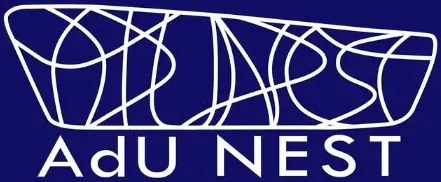</span><span class="vw-text"><span class="vw-name">Adamson NEST — Neo Science &amp; Technology Incubation Center</span><span class="vw-sub">Adamson University · NCR</span></span></button>
      <button class="vw-item" data-src="addu-addventures-technology-business-incubator.html" data-k="addu addventures technology business incubator (tbi) tbi ateneo de davao university (addu) · region xi" data-f1="TBI" data-f2="Region XI" title="AdDU ADDVentures Technology Business Incubator (TBI)"><span class="vw-thumb"></span><span class="vw-text"><span class="vw-name">AdDU ADDVentures Technology Business Incubator (TBI)</span><span class="vw-sub">Ateneo de Davao University (AdDU) · Region XI</span></span></button>
      <button class="vw-item" data-src="adzu-azul-hub.html" data-k="adzu azul hub (tbi) tbi ateneo de zamboanga university — under acend, with dost-pcieerd · regi" data-f1="TBI" data-f2="Region IX" title="AdZU AZUL Hub (TBI)"><span class="vw-thumb"></span><span class="vw-text"><span class="vw-name">AdZU AZUL Hub (TBI)</span><span class="vw-sub">Ateneo de Zamboanga University — under ACEND, with DOST-PCIEERD · Regi</span></span></button>
      <button class="vw-item" data-src="aim-dado-banatao-incubator.html" data-k="aim–dado banatao incubator tbi asian institute of management · ncr" data-f1="TBI" data-f2="NCR" title="AIM–Dado Banatao Incubator"><span class="vw-thumb"></span><span class="vw-text"><span class="vw-name">AIM–Dado Banatao Incubator</span><span class="vw-sub">Asian Institute of Management · NCR</span></span></button>
      <button class="vw-item" data-src="aligwas-tbi.html" data-k="aligwas tbi tbi pangasinan state university · region i" data-f1="TBI" data-f2="Region I" title="Aligwas TBI"><span class="vw-thumb"></span><span class="vw-text"><span class="vw-name">Aligwas TBI</span><span class="vw-sub">Pangasinan State University · Region I</span></span></button>
      <button class="vw-item" data-src="anlag-ta-buksu-tbi.html" data-k="anlag ta buksu-tbi tbi bukidnon state university · region x" data-f1="TBI" data-f2="Region X" title="ANLAG TA BUKSU-TBI"><span class="vw-thumb"></span><span class="vw-text"><span class="vw-name">ANLAG TA BUKSU-TBI</span><span class="vw-sub">Bukidnon State University · Region X</span></span></button>
      <button class="vw-item" data-src="balik-sa-bohol-tbi.html" data-k="balik sa bohol tbi tbi bohol island state university · region vii" data-f1="TBI" data-f2="Region VII" title="BALIK sa Bohol TBI"><span class="vw-thumb"></span><span class="vw-text"><span class="vw-name">BALIK sa Bohol TBI</span><span class="vw-sub">Bohol Island State University · Region VII</span></span></button>
      <button class="vw-item" data-src="baras-tbi.html" data-k="baras tbi (business assistance for research acceleration &amp; sustainability) tbi bulacan state university · region iii" data-f1="TBI" data-f2="Region III" title="BARAS TBI (Business Assistance for Research Acceleration &amp; Sustainability)"><span class="vw-thumb"></span><span class="vw-text"><span class="vw-name">BARAS TBI (Business Assistance for Research Acceleration &amp; Sustainability)</span><span class="vw-sub">Bulacan State University · Region III</span></span></button>
      <button class="vw-item" data-src="batstateu-center-for-technopreneurship-innovation.html" data-k="batstateu center for technopreneurship &amp; innovation (cti) tbi batangas state university (the national engineering university) · regi" data-f1="TBI" data-f2="Region IV-A" title="BatStateU Center for Technopreneurship &amp; Innovation (CTI)"><span class="vw-thumb"></span><span class="vw-text"><span class="vw-name">BatStateU Center for Technopreneurship &amp; Innovation (CTI)</span><span class="vw-sub">Batangas State University (The National Engineering University) · Regi</span></span></button>
      <button class="vw-item" data-src="bicol-university-tbi-sili-deli.html" data-k="bicol university tbi / sili deli tbi bicol university · region v" data-f1="TBI" data-f2="Region V" title="Bicol University TBI / SILI DELI"><span class="vw-thumb"></span><span class="vw-text"><span class="vw-name">Bicol University TBI / SILI DELI</span><span class="vw-sub">Bicol University · Region V</span></span></button>
      <button class="vw-item" data-src="biznest-technology-business-incubator.html" data-k="biznest technology business incubator (csu) tbi cagayan state university · region ii" data-f1="TBI" data-f2="Region II" title="BIZNEST Technology Business Incubator (CSU)"><span class="vw-thumb"></span><span class="vw-text"><span class="vw-name">BIZNEST Technology Business Incubator (CSU)</span><span class="vw-sub">Cagayan State University · Region II</span></span></button>
      <button class="vw-item" data-src="brainsparks.html" data-k="brainsparks tbi brainsparks · ncr" data-f1="TBI" data-f2="NCR" title="Brainsparks"><span class="vw-thumb"></span><span class="vw-text"><span class="vw-name">Brainsparks</span><span class="vw-sub">Brainsparks · NCR</span></span></button>
      <button class="vw-item" data-src="cavite-state-university-agri-aqua-technology-business-incubator.html" data-k="cavite state university agri-aqua technology business incubator (cvsu-atbi) tbi cavite state university · region iv-a" data-f1="TBI" data-f2="Region IV-A" title="Cavite State University Agri-Aqua Technology Business Incubator (CvSU-ATBI)"><span class="vw-thumb">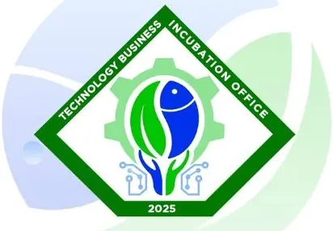</span><span class="vw-text"><span class="vw-name">Cavite State University Agri-Aqua Technology Business Incubator (CvSU-ATBI)</span><span class="vw-sub">Cavite State University · Region IV-A</span></span></button>
      <button class="vw-item" data-src="cdo-bites-cdo-business-incubation-tech-entrepreneurship-startups.html" data-k="cdo bites — cdo business incubation, tech entrepreneurship &amp; startups tbi university of science &amp; technology of southern philippines (ustp) · re" data-f1="TBI" data-f2="Region X" title="CDO BITES — CDO Business Incubation, Tech Entrepreneurship &amp; Startups"><span class="vw-thumb"></span><span class="vw-text"><span class="vw-name">CDO BITES — CDO Business Incubation, Tech Entrepreneurship &amp; Startups</span><span class="vw-sub">University of Science &amp; Technology of Southern Philippines (USTP) · Re</span></span></button>
      <button class="vw-item" data-src="coastline-5023-upv-fisheries-technology-business-incubator.html" data-k="coastline 5023 — upv fisheries technology business incubator (ftbi) tbi up visayas · region vi" data-f1="TBI" data-f2="Region VI" title="COASTLINE 5023 — UPV Fisheries Technology Business Incubator (FTBI)"><span class="vw-thumb">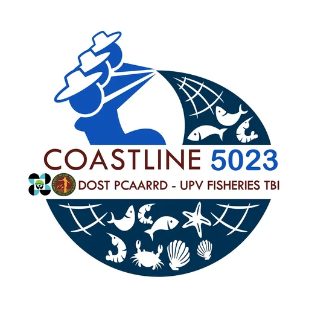</span><span class="vw-text"><span class="vw-name">COASTLINE 5023 — UPV Fisheries Technology Business Incubator (FTBI)</span><span class="vw-sub">UP Visayas · Region VI</span></span></button>
      <button class="vw-item" data-src="cpu-cpugad-technology-business-incubator.html" data-k="cpu cpugad technology business incubator tbi central philippine university (cpu) · region vi" data-f1="TBI" data-f2="Region VI" title="CPU CPUGAD Technology Business Incubator"><span class="vw-thumb"></span><span class="vw-text"><span class="vw-name">CPU CPUGAD Technology Business Incubator</span><span class="vw-sub">Central Philippine University (CPU) · Region VI</span></span></button>
      <button class="vw-item" data-src="cspc-asog-technology-business-incubator.html" data-k="cspc asog technology business incubator tbi camarines sur polytechnic colleges (cspc) · region v" data-f1="TBI" data-f2="Region V" title="CSPC ASOG Technology Business Incubator"><span class="vw-thumb">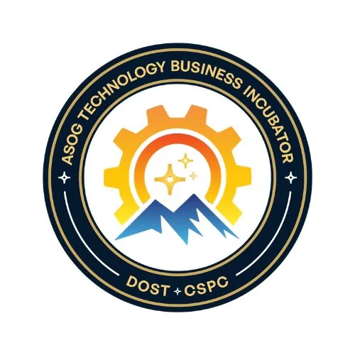</span><span class="vw-text"><span class="vw-name">CSPC ASOG Technology Business Incubator</span><span class="vw-sub">Camarines Sur Polytechnic Colleges (CSPC) · Region V</span></span></button>
      <button class="vw-item has-rem" data-src="ctu-atbi-dost-pcaarrd-agri-aqua-tbi.html" data-k="ctu-atbi — dost-pcaarrd agri-aqua tbi (cebu technological university) tbi cebu technological university — tuburan campus, with dost-pcaarrd · re" data-f1="TBI" data-f2="Region VII" title="CTU-ATBI — DOST-PCAARRD Agri-Aqua TBI (Cebu Technological University)

⚠ Internal remarks (not shown on the page):
• 🏛️ Not the same as TBID. CTU separately maintains the Office of the University Director for Technology Business Incubation and Development (OTBID / TBID), a university administrative office. TBID&#x27;s directors attended CTU-ATBI&#x27;s 2022 commitment meeting as a partner unit, not as the incubator itself. This record previously described TBID and carried the university&#x27;s general Facebook page and switchboard email. It now describes CTU-ATBI, the DOST-PCAARRD-funded incubator, which has its own page and its own address, ctu-atbi@ctu.edu.ph.
• Reworked July 10, 2026. The row previously documented OTBID / TBID, a CTU administrative office, and pointed at the university&#x27;s general Facebook page (ctu.premier) and switchboard address (information@ctu.edu.ph). Per the user: CTU&#x27;s DOST-PCAARRD funding makes CTU-ATBI the correct TBI for this record. Facebook, email, website, and logo repointed accordingly; body rewritten from CTU&#x27;s own campus reporting and the DOST-PCAARRD programme page. ⚠️ Logo is low-resolution — the incubator&#x27;s Facebook profile picture is only 422×422, the largest it publishes. It was upscaled to the standard 1000×1000 canvas; a crisp version would have to come from CTU directly. Note also that CTU-ATBI&#x27;s Facebook lists its address only as &quot;Cebu City&quot; while all operational reporting places it at the Tuburan campus."><span class="vw-thumb"></span><span class="vw-text"><span class="vw-name">CTU-ATBI — DOST-PCAARRD Agri-Aqua TBI (Cebu Technological University)<span class="vw-flag" aria-label="has internal remarks">⚠</span></span><span class="vw-sub">Cebu Technological University — Tuburan Campus, with DOST-PCAARRD · Re</span></span></button>
      <button class="vw-item" data-src="dlsu-animo-labs-tbi-fablab.html" data-k="dlsu animo labs — tbi &amp; fablab tbi de la salle university (dlsu) · ncr" data-f1="TBI" data-f2="NCR" title="DLSU Animo Labs — TBI &amp; FabLab"><span class="vw-thumb">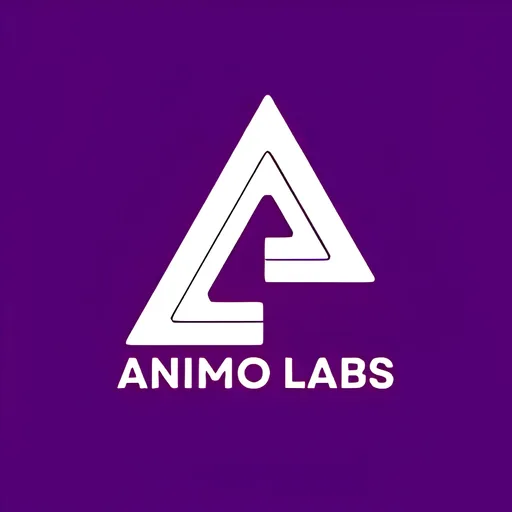</span><span class="vw-text"><span class="vw-name">DLSU Animo Labs — TBI &amp; FabLab</span><span class="vw-sub">De La Salle University (DLSU) · NCR</span></span></button>
      <button class="vw-item" data-src="dnsc-bugsai-technology-business-incubator.html" data-k="dnsc bugsai technology business incubator tbi davao del norte state college (dnsc) · region xi" data-f1="TBI" data-f2="Region XI" title="DNSC BUGSAI Technology Business Incubator"><span class="vw-thumb"></span><span class="vw-text"><span class="vw-name">DNSC BUGSAI Technology Business Incubator</span><span class="vw-sub">Davao del Norte State College (DNSC) · Region XI</span></span></button>
      <button class="vw-item" data-src="dost-fprdi-tubo-forest-products-technology-business-incubator.html" data-k="dost-fprdi tubo forest products technology business incubator (fptbi) tbi forest products r&amp;d institute (dost) · region iv-a" data-f1="TBI" data-f2="Region IV-A" title="DOST-FPRDI Tubo Forest Products Technology Business Incubator (FPTBI)"><span class="vw-thumb"></span><span class="vw-text"><span class="vw-name">DOST-FPRDI Tubo Forest Products Technology Business Incubator (FPTBI)</span><span class="vw-sub">Forest Products R&amp;D Institute (DOST) · Region IV-A</span></span></button>
      <button class="vw-item" data-src="dost-mmsu-bannuar-technology-business-incubator.html" data-k="dost-mmsu bannuar technology business incubator tbi mariano marcos state university · region i" data-f1="TBI" data-f2="Region I" title="DOST-MMSU Bannuar Technology Business Incubator"><span class="vw-thumb">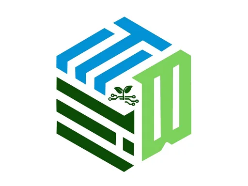</span><span class="vw-text"><span class="vw-name">DOST-MMSU Bannuar Technology Business Incubator</span><span class="vw-sub">Mariano Marcos State University · Region I</span></span></button>
      <button class="vw-item" data-src="dost-neust-tbi.html" data-k="dost-neust tbi tbi nueva ecija university of science &amp; technology · region iii" data-f1="TBI" data-f2="Region III" title="DOST-NEUST TBI"><span class="vw-thumb"></span><span class="vw-text"><span class="vw-name">DOST-NEUST TBI</span><span class="vw-sub">Nueva Ecija University of Science &amp; Technology · Region III</span></span></button>
      <button class="vw-item has-rem" data-src="dost-pcaarrd-lspu-agri-aqua-technology-business-incubator.html" data-k="dost-pcaarrd lspu agri-aqua technology business incubator (lspu atbi) tbi laguna state polytechnic university · region iv-a" data-f1="TBI" data-f2="Region IV-A" title="DOST-PCAARRD LSPU Agri-Aqua Technology Business Incubator (LSPU ATBI)

⚠ Internal remarks (not shown on the page):
• ✅ Corrected July 10, 2026. This row previously pointed at LSPU&#x27;s institutional Facebook page (LSPUOfficial) and carried the university&#x27;s general address, information.office@lspu.edu.ph. The incubator has its own page — DOST PCAARRD LSPU Agri-Aqua Technology Business Incubator (1.5K followers), self-described as &quot;the official Facebook page of the LSPU Agri-Aqua Technology Business Incubator (LSPU ATBI).&quot; Facebook, email (aatbi.lspu@gmail.com), and logo all repointed to the centre itself. Address on file there: L. de Leon St., Siniloan, Laguna 4019 · 0995 914 4715. The ATBI logo (dated 2019) replaced the LSPU institutional seal."><span class="vw-thumb"></span><span class="vw-text"><span class="vw-name">DOST-PCAARRD LSPU Agri-Aqua Technology Business Incubator (LSPU ATBI)<span class="vw-flag" aria-label="has internal remarks">⚠</span></span><span class="vw-sub">Laguna State Polytechnic University · Region IV-A</span></span></button>
      <button class="vw-item" data-src="dost-pcaarrd-bsu-agriculture-food-tbi.html" data-k="dost-pcaarrd-bsu agriculture &amp; food tbi tbi benguet state university · car" data-f1="TBI" data-f2="CAR" title="DOST-PCAARRD-BSU Agriculture &amp; Food TBI"><span class="vw-thumb">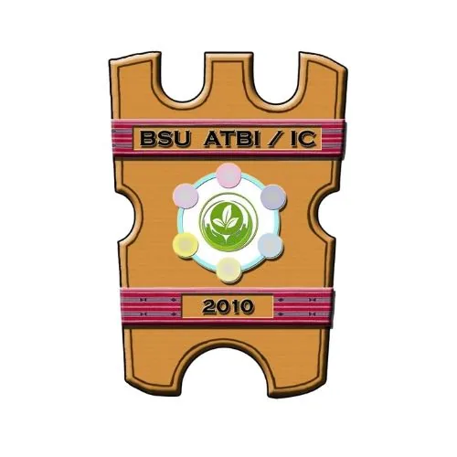</span><span class="vw-text"><span class="vw-name">DOST-PCAARRD-BSU Agriculture &amp; Food TBI</span><span class="vw-sub">Benguet State University · CAR</span></span></button>
      <button class="vw-item" data-src="dost-pcaarrd-capsu-agriculture-aquaculture-tbi.html" data-k="dost-pcaarrd-capsu agriculture &amp; aquaculture tbi tbi capiz state university · region vi" data-f1="TBI" data-f2="Region VI" title="DOST-PCAARRD-CapSU Agriculture &amp; Aquaculture TBI"><span class="vw-thumb"></span><span class="vw-text"><span class="vw-name">DOST-PCAARRD-CapSU Agriculture &amp; Aquaculture TBI</span><span class="vw-sub">Capiz State University · Region VI</span></span></button>
      <button class="vw-item" data-src="dost-pcaarrd-clsu-agriculture-food-tbi.html" data-k="dost-pcaarrd-clsu agriculture &amp; food tbi tbi central luzon state university · region iii" data-f1="TBI" data-f2="Region III" title="DOST-PCAARRD-CLSU Agriculture &amp; Food TBI"><span class="vw-thumb"></span><span class="vw-text"><span class="vw-name">DOST-PCAARRD-CLSU Agriculture &amp; Food TBI</span><span class="vw-sub">Central Luzon State University · Region III</span></span></button>
      <button class="vw-item" data-src="dost-pcaarrd-cmu-agriculture-food-natural-resources-tbi.html" data-k="dost-pcaarrd-cmu agriculture, food &amp; natural resources tbi tbi central mindanao university · region x" data-f1="TBI" data-f2="Region X" title="DOST-PCAARRD-CMU Agriculture, Food &amp; Natural Resources TBI"><span class="vw-thumb"></span><span class="vw-text"><span class="vw-name">DOST-PCAARRD-CMU Agriculture, Food &amp; Natural Resources TBI</span><span class="vw-sub">Central Mindanao University · Region X</span></span></button>
      <button class="vw-item" data-src="dost-pcaarrd-dmmmsu-agri-aqua-technology-business-incubator.html" data-k="dost-pcaarrd-dmmmsu agri-aqua technology business incubator (atbi) tbi don mariano marcos memorial state university · region i" data-f1="TBI" data-f2="Region I" title="DOST-PCAARRD-DMMMSU Agri-Aqua Technology Business Incubator (ATBI)"><span class="vw-thumb"></span><span class="vw-text"><span class="vw-name">DOST-PCAARRD-DMMMSU Agri-Aqua Technology Business Incubator (ATBI)</span><span class="vw-sub">Don Mariano Marcos Memorial State University · Region I</span></span></button>
      <button class="vw-item" data-src="dost-pcaarrd-isu-livestock-tbi.html" data-k="dost-pcaarrd-isu livestock tbi tbi isabela state university · region ii" data-f1="TBI" data-f2="Region II" title="DOST-PCAARRD-ISU Livestock TBI"><span class="vw-thumb"></span><span class="vw-text"><span class="vw-name">DOST-PCAARRD-ISU Livestock TBI</span><span class="vw-sub">Isabela State University · Region II</span></span></button>
      <button class="vw-item" data-src="dost-pcaarrd-vsu-agri-aqua-technology-business-incubator.html" data-k="dost-pcaarrd-vsu agri-aqua technology business incubator (vsu-tbi) tbi visayas state university · region viii" data-f1="TBI" data-f2="Region VIII" title="DOST-PCAARRD-VSU Agri-Aqua Technology Business Incubator (VSU-TBI)"><span class="vw-thumb"></span><span class="vw-text"><span class="vw-name">DOST-PCAARRD-VSU Agri-Aqua Technology Business Incubator (VSU-TBI)</span><span class="vw-sub">Visayas State University · Region VIII</span></span></button>
      <button class="vw-item" data-src="dost-pcaarrd-wmsu-agri-aqua-technology-business-incubator.html" data-k="dost-pcaarrd-wmsu agri-aqua technology business incubator (atbi) tbi western mindanao state university · region ix" data-f1="TBI" data-f2="Region IX" title="DOST-PCAARRD-WMSU Agri-Aqua Technology Business Incubator (ATBI)"><span class="vw-thumb"></span><span class="vw-text"><span class="vw-name">DOST-PCAARRD-WMSU Agri-Aqua Technology Business Incubator (ATBI)</span><span class="vw-sub">Western Mindanao State University · Region IX</span></span></button>
      <button class="vw-item" data-src="dost-pup-tbi-pylon-hub.html" data-k="dost-pup tbi pylon hub tbi polytechnic university of the philippines (pup) · ncr" data-f1="TBI" data-f2="NCR" title="DOST-PUP TBI Pylon Hub"><span class="vw-thumb">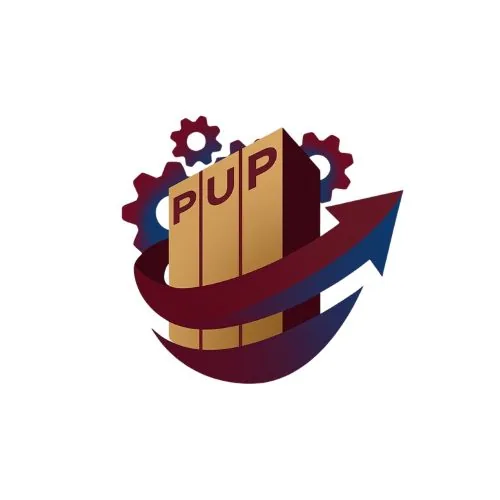</span><span class="vw-text"><span class="vw-name">DOST-PUP TBI Pylon Hub</span><span class="vw-sub">Polytechnic University of the Philippines (PUP) · NCR</span></span></button>
      <button class="vw-item" data-src="dost-snsu-waves-tbi.html" data-k="dost-snsu waves tbi tbi surigao del norte state university · region xiii" data-f1="TBI" data-f2="Region XIII" title="DOST-SNSU WAVES TBI"><span class="vw-thumb">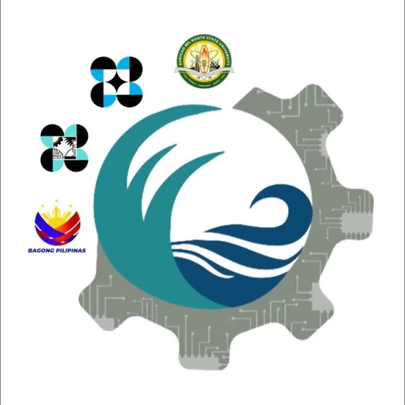</span><span class="vw-text"><span class="vw-name">DOST-SNSU WAVES TBI</span><span class="vw-sub">Surigao del Norte State University · Region XIII</span></span></button>
      <button class="vw-item" data-src="dost-tsu-aslagan-tbi.html" data-k="dost-tsu aslagan tbi tbi tarlac state university · region iii" data-f1="TBI" data-f2="Region III" title="DOST-TSU Aslagan TBI"><span class="vw-thumb"></span><span class="vw-text"><span class="vw-name">DOST-TSU Aslagan TBI</span><span class="vw-sub">Tarlac State University · Region III</span></span></button>
      <button class="vw-item has-rem" data-src="encephalon-tbi.html" data-k="encephalon tbi tbi holy angel university · region iii" data-f1="TBI" data-f2="Region III" title="Encephalon TBI

⚠ Internal remarks (not shown on the page):
• Operating status flagged “Uncertain” — confirm the centre is active before relying on this listing."><span class="vw-thumb"></span><span class="vw-text"><span class="vw-name">Encephalon TBI<span class="vw-flag" aria-label="has internal remarks">⚠</span></span><span class="vw-sub">Holy Angel University · Region III</span></span></button>
      <button class="vw-item" data-src="hifi-hub-of-innovation-for-inclusion.html" data-k="hifi — hub of innovation for inclusion tbi de la salle-college of saint benilde · ncr" data-f1="TBI" data-f2="NCR" title="HiFi — Hub of Innovation for Inclusion"><span class="vw-thumb"></span><span class="vw-text"><span class="vw-name">HiFi — Hub of Innovation for Inclusion</span><span class="vw-sub">De La Salle-College of Saint Benilde · NCR</span></span></button>
      <button class="vw-item" data-src="icebox-tbi.html" data-k="icebox tbi tbi msu-general santos · region xii" data-f1="TBI" data-f2="Region XII" title="ICEBOX TBI"><span class="vw-thumb"></span><span class="vw-text"><span class="vw-name">ICEBOX TBI</span><span class="vw-sub">MSU-General Santos · Region XII</span></span></button>
      <button class="vw-item" data-src="ideaspace-foundation.html" data-k="ideaspace foundation (incubator hub) tbi ideaspace foundation · ncr" data-f1="TBI" data-f2="NCR" title="IdeaSpace Foundation (Incubator Hub)"><span class="vw-thumb"></span><span class="vw-text"><span class="vw-name">IdeaSpace Foundation (Incubator Hub)</span><span class="vw-sub">IdeaSpace Foundation · NCR</span></span></button>
      <button class="vw-item" data-src="isat-u-kwadra-technology-business-incubator.html" data-k="isat-u kwadra technology business incubator tbi iloilo science and technology university (isat-u) · region vi" data-f1="TBI" data-f2="Region VI" title="ISAT-U KWADRA Technology Business Incubator"><span class="vw-thumb"></span><span class="vw-text"><span class="vw-name">ISAT-U KWADRA Technology Business Incubator</span><span class="vw-sub">Iloilo Science and Technology University (ISAT-U) · Region VI</span></span></button>
      <button class="vw-item" data-src="magis-technology-business-incubator.html" data-k="magis technology business incubator (tbi) tbi ateneo de naga university (adnu) · region v" data-f1="TBI" data-f2="Region V" title="MAGIS Technology Business Incubator (TBI)"><span class="vw-thumb"></span><span class="vw-text"><span class="vw-name">MAGIS Technology Business Incubator (TBI)</span><span class="vw-sub">Ateneo de Naga University (ADNU) · Region V</span></span></button>
      <button class="vw-item" data-src="msu-iit-center-of-innovation-and-technopreneurship-ideya.html" data-k="msu-iit center of innovation and technopreneurship (cit) — ideya tbi msu – iligan institute of technology (msu-iit) · region x" data-f1="TBI" data-f2="Region X" title="MSU-IIT Center of Innovation and Technopreneurship (CIT) — iDEYA"><span class="vw-thumb"></span><span class="vw-text"><span class="vw-name">MSU-IIT Center of Innovation and Technopreneurship (CIT) — iDEYA</span><span class="vw-sub">MSU – Iligan Institute of Technology (MSU-IIT) · Region X</span></span></button>
      <button class="vw-item" data-src="navigatu-tbi.html" data-k="navigatu tbi (dost-csu) tbi caraga state university · region xiii" data-f1="TBI" data-f2="Region XIII" title="Navigatu TBI (DOST-CSU)"><span class="vw-thumb"></span><span class="vw-text"><span class="vw-name">Navigatu TBI (DOST-CSU)</span><span class="vw-sub">Caraga State University · Region XIII</span></span></button>
      <button class="vw-item" data-src="palawan-international-technology-business-incubator.html" data-k="palawan international technology business incubator (pitbi) tbi palawan state university · region iv-b" data-f1="TBI" data-f2="Region IV-B" title="Palawan International Technology Business Incubator (PITBI)"><span class="vw-thumb">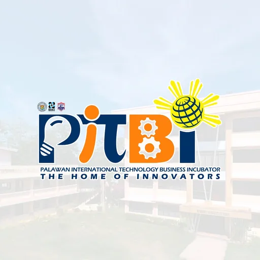</span><span class="vw-text"><span class="vw-name">Palawan International Technology Business Incubator (PITBI)</span><span class="vw-sub">Palawan State University · Region IV-B</span></span></button>
      <button class="vw-item" data-src="pwc-chi-technology-business-incubator.html" data-k="pwc chi+ technology business incubator tbi philippine women&#x27;s college of davao (pwc) · region xi" data-f1="TBI" data-f2="Region XI" title="PWC CHI+ Technology Business Incubator"><span class="vw-thumb"></span><span class="vw-text"><span class="vw-name">PWC CHI+ Technology Business Incubator</span><span class="vw-sub">Philippine Women&#x27;s College of Davao (PWC) · Region XI</span></span></button>
      <button class="vw-item" data-src="qbo-innovation-hub.html" data-k="qbo innovation hub tbi qbo innovation (a division of ideaspace); founding partners ideaspace," data-f1="TBI" data-f2="NCR" title="QBO Innovation Hub"><span class="vw-thumb"></span><span class="vw-text"><span class="vw-name">QBO Innovation Hub</span><span class="vw-sub">QBO Innovation (a division of Ideaspace); founding partners Ideaspace,</span></span></button>
      <button class="vw-item" data-src="sabatan-nvsu-technopreneurs-hub.html" data-k="sabatan — nvsu technopreneurs hub tbi nueva vizcaya state university · region ii" data-f1="TBI" data-f2="Region II" title="Sabatan — NVSU Technopreneurs Hub"><span class="vw-thumb"></span><span class="vw-text"><span class="vw-name">Sabatan — NVSU Technopreneurs Hub</span><span class="vw-sub">Nueva Vizcaya State University · Region II</span></span></button>
      <button class="vw-item" data-src="sikat-tbi.html" data-k="sikat tbi tbi bataan peninsula state university · region iii" data-f1="TBI" data-f2="Region III" title="SIKAT TBI"><span class="vw-thumb"></span><span class="vw-text"><span class="vw-name">SIKAT TBI</span><span class="vw-sub">Bataan Peninsula State University · Region III</span></span></button>
      <button class="vw-item" data-src="sinergy-tbi.html" data-k="sinergy tbi (silliman innovations on energy) tbi silliman university · region xviii: nir" data-f1="TBI" data-f2="Region XVIII: NIR" title="SINERGY TBI (Silliman Innovations on Energy)"><span class="vw-thumb"></span><span class="vw-text"><span class="vw-name">SINERGY TBI (Silliman Innovations on Energy)</span><span class="vw-sub">Silliman University · Region XVIII: NIR</span></span></button>
      <button class="vw-item" data-src="sirib-center-saint-louis-university.html" data-k="sirib center — saint louis university tbi saint louis university · car" data-f1="TBI" data-f2="CAR" title="SIRIB Center — Saint Louis University"><span class="vw-thumb"></span><span class="vw-text"><span class="vw-name">SIRIB Center — Saint Louis University</span><span class="vw-sub">Saint Louis University · CAR</span></span></button>
      <button class="vw-item" data-src="ssu-tbi-lambat.html" data-k="ssu tbi lambat (samar state university) tbi samar state university (ssu) · region viii" data-f1="TBI" data-f2="Region VIII" title="SSU TBI LAMBAT (Samar State University)"><span class="vw-thumb"></span><span class="vw-text"><span class="vw-name">SSU TBI LAMBAT (Samar State University)</span><span class="vw-sub">Samar State University (SSU) · Region VIII</span></span></button>
      <button class="vw-item has-rem" data-src="step-app-tbi.html" data-k="step app tbi (sksu) tbi sultan kudarat state university (access campus), with dost-pcieerd und" data-f1="TBI" data-f2="Region XII" title="STEP APP TBI (SKSU)

⚠ Internal remarks (not shown on the page):
• 🏛️ How this record evolved. This page previously catalogued the DOST-PCAARRD-SKSU Agri-Aqua TBI, established in 2018 to serve agri-aqua startups around three commodity areas — halal goat production, mushroom cultivation, and fishery-product processing — supporting eight incubatees who generated over ₱3.26 million in gross income. SKSU&#x27;s incubation work is now delivered under the STEP APP banner, so the record was rebranded in place rather than duplicated. The old contact sksuaatbi@gmail.com and page facebook.com/sksuatbi are superseded.
• ⚠️ Funding line changed with the rebrand. The former Agri-Aqua TBI was a DOST-PCAARRD initiative. STEP APP states it is funded by DOST-PCIEERD, through a grant to SKSU under the HEIRIT (Higher Education Institution Readiness for Innovation and Technopreneurship) Program. Both attributions appear on STEP APP&#x27;s own site. Worth confirming with the center whether the PCAARRD agri-aqua mandate still runs alongside the PCIEERD grant.
• Verified July 10, 2026. Rebranded from DOST-PCAARRD-SKSU Agri-Aqua TBI on the user&#x27;s instruction. Contact details, address, and phone taken from the center&#x27;s own Facebook contact block; programme structure from stepapptbi.com. Logo pulled from the center&#x27;s Facebook profile picture (2048×2048) rather than the website, whose largest available logo asset is only 270×273."><span class="vw-thumb">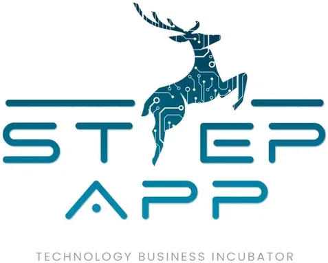</span><span class="vw-text"><span class="vw-name">STEP APP TBI (SKSU)<span class="vw-flag" aria-label="has internal remarks">⚠</span></span><span class="vw-sub">Sultan Kudarat State University (ACCESS Campus), with DOST-PCIEERD und</span></span></button>
      <button class="vw-item" data-src="t-i-p-technocore.html" data-k="t.i.p. technocore (student incubation) tbi technological institute of the philippines (tip) · ncr" data-f1="TBI" data-f2="NCR" title="T.I.P. TechnoCoRe (Student Incubation)"><span class="vw-thumb"></span><span class="vw-text"><span class="vw-name">T.I.P. TechnoCoRe (Student Incubation)</span><span class="vw-sub">Technological Institute of the Philippines (TIP) · NCR</span></span></button>
      <button class="vw-item" data-src="tara-agri-aqua-technology-business-incubator.html" data-k="tara agri-aqua technology business incubator (caraga state university) tbi caraga state university (csu) · region xiii" data-f1="TBI" data-f2="Region XIII" title="TARA Agri-Aqua Technology Business Incubator (Caraga State University)"><span class="vw-thumb"></span><span class="vw-text"><span class="vw-name">TARA Agri-Aqua Technology Business Incubator (Caraga State University)</span><span class="vw-sub">Caraga State University (CSU) · Region XIII</span></span></button>
      <button class="vw-item" data-src="tbi-center-at-miriam-college-henry-sy-sr-innovation-center.html" data-k="tbi center at miriam college — henry sy sr. innovation center tbi miriam college · ncr" data-f1="TBI" data-f2="NCR" title="TBI Center at Miriam College — Henry Sy Sr. Innovation Center"><span class="vw-thumb"></span><span class="vw-text"><span class="vw-name">TBI Center at Miriam College — Henry Sy Sr. Innovation Center</span><span class="vw-sub">Miriam College · NCR</span></span></button>
      <button class="vw-item" data-src="think-tinker-laboratory-mapua-university.html" data-k="think &amp; tinker laboratory — mapúá university tbi mapúá university · ncr" data-f1="TBI" data-f2="NCR" title="Think &amp; Tinker Laboratory — Mapúá University"><span class="vw-thumb"></span><span class="vw-text"><span class="vw-name">Think &amp; Tinker Laboratory — Mapúá University</span><span class="vw-sub">Mapúá University · NCR</span></span></button>
      <button class="vw-item" data-src="tigre-technology-business-incubator.html" data-k="tigre technology business incubator (ncf) tbi naga college foundation (ncf) · region v" data-f1="TBI" data-f2="Region V" title="TIGRE Technology Business Incubator (NCF)"><span class="vw-thumb"></span><span class="vw-text"><span class="vw-name">TIGRE Technology Business Incubator (NCF)</span><span class="vw-sub">Naga College Foundation (NCF) · Region V</span></span></button>
      <button class="vw-item" data-src="tip-nitro-tbi.html" data-k="tip nitro — tbi tbi technological institute of the philippines (tip) · ncr" data-f1="TBI" data-f2="NCR" title="TIP NITRO — TBI"><span class="vw-thumb"></span><span class="vw-text"><span class="vw-name">TIP NITRO — TBI</span><span class="vw-sub">Technological Institute of the Philippines (TIP) · NCR</span></span></button>
      <button class="vw-item" data-src="tomasinno-center-tbi-ust.html" data-k="tomasinno center tbi — ust tbi university of santo tomas · ncr" data-f1="TBI" data-f2="NCR" title="TOMASInno Center TBI — UST"><span class="vw-thumb">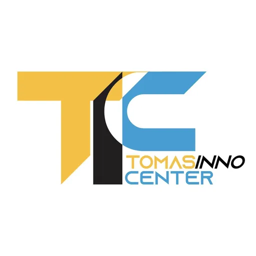</span><span class="vw-text"><span class="vw-name">TOMASInno Center TBI — UST</span><span class="vw-sub">University of Santo Tomas · NCR</span></span></button>
      <button class="vw-item" data-src="tupv-hive-hub-for-innovation-value-engineering.html" data-k="tupv hive — hub for innovation &amp; value engineering tbi technological university of the philippines – visayas (tupv) · region " data-f1="TBI" data-f2="Region XVIII: NIR" title="TUPV HIVE — Hub for Innovation &amp; Value Engineering"><span class="vw-thumb"></span><span class="vw-text"><span class="vw-name">TUPV HIVE — Hub for Innovation &amp; Value Engineering</span><span class="vw-sub">Technological University of the Philippines – Visayas (TUPV) · Region </span></span></button>
      <button class="vw-item" data-src="ucians-uc-innovation-nurturing-space.html" data-k="ucians — uc innovation &amp; nurturing space (tbi) tbi university of the cordilleras (uc) · car" data-f1="TBI" data-f2="CAR" title="UCIANS — UC Innovation &amp; Nurturing Space (TBI)"><span class="vw-thumb"></span><span class="vw-text"><span class="vw-name">UCIANS — UC Innovation &amp; Nurturing Space (TBI)</span><span class="vw-sub">University of the Cordilleras (UC) · CAR</span></span></button>
      <button class="vw-item" data-src="uic-marian-technology-business-incubator.html" data-k="uic marian technology business incubator tbi university of the immaculate conception (uic) · region xi" data-f1="TBI" data-f2="Region XI" title="UIC MARIAN Technology Business Incubator"><span class="vw-thumb"></span><span class="vw-text"><span class="vw-name">UIC MARIAN Technology Business Incubator</span><span class="vw-sub">University of the Immaculate Conception (UIC) · Region XI</span></span></button>
      <button class="vw-item" data-src="umasenso-hub.html" data-k="umasenso hub tbi university of mindanao · region xi" data-f1="TBI" data-f2="Region XI" title="UMasenso Hub"><span class="vw-thumb"></span><span class="vw-text"><span class="vw-name">UMasenso Hub</span><span class="vw-sub">University of Mindanao · Region XI</span></span></button>
      <button class="vw-item" data-src="up-baguio-silbi-tbi.html" data-k="up baguio silbi tbi tbi university of the philippines baguio · car" data-f1="TBI" data-f2="CAR" title="UP Baguio SILBI TBI"><span class="vw-thumb"></span><span class="vw-text"><span class="vw-name">UP Baguio SILBI TBI</span><span class="vw-sub">University of the Philippines Baguio · CAR</span></span></button>
      <button class="vw-item has-rem" data-src="up-cebu-business-incubator-for-information-technology.html" data-k="up cebu business incubator for information technology (up cebu init) tbi up cebu · region vii" data-f1="TBI" data-f2="Region VII" title="UP Cebu Business Incubator for Information Technology (UP Cebu inIT)

⚠ Internal remarks (not shown on the page):
• Operating status flagged “Uncertain” — confirm the centre is active before relying on this listing."><span class="vw-thumb"></span><span class="vw-text"><span class="vw-name">UP Cebu Business Incubator for Information Technology (UP Cebu inIT)<span class="vw-flag" aria-label="has internal remarks">⚠</span></span><span class="vw-sub">UP Cebu · Region VII</span></span></button>
      <button class="vw-item" data-src="upgrade-innolab-inc.html" data-k="upgrade innolab, inc. (formerly up mindanao upgrade tbi) tbi independent (private non-profit; spun off from up mindanao in 2022) · " data-f1="TBI" data-f2="Region XI" title="Upgrade Innolab, Inc. (formerly UP Mindanao UPGRADE TBI)"><span class="vw-thumb"></span><span class="vw-text"><span class="vw-name">Upgrade Innolab, Inc. (formerly UP Mindanao UPGRADE TBI)</span><span class="vw-sub">Independent (private non-profit; spun off from UP Mindanao in 2022) · </span></span></button>
      <button class="vw-item has-rem" data-src="uplb-sibol-labs.html" data-k="uplb sibol labs (uplb ttbdo) tbi up los baños technology transfer and business development office (ttbd" data-f1="TBI" data-f2="Region IV-A" title="UPLB SIBOL Labs (UPLB TTBDO)

⚠ Internal remarks (not shown on the page):
• ⚠️ Possible duplicate record. The row UPLB SIBOL Labs describes the same organisation — its old Facebook page self-describes as &quot;the Technology Business Incubation arm of the TTBDO,&quot; not a fabrication lab — yet it is categorised FabLab while this row is categorised TBI. Both rows share the same logo asset and the same TTBDO parent. Worth deciding whether to merge them."><span class="vw-thumb"></span><span class="vw-text"><span class="vw-name">UPLB SIBOL Labs (UPLB TTBDO)<span class="vw-flag" aria-label="has internal remarks">⚠</span></span><span class="vw-sub">UP Los Baños Technology Transfer and Business Development Office (TTBD</span></span></button>
      <button class="vw-item has-rem" data-src="upscale-innovation-hub.html" data-k="upscale innovation hub tbi up diliman (college of engineering), with dost-pcieerd · ncr" data-f1="TBI" data-f2="NCR" title="UPScale Innovation Hub

⚠ Internal remarks (not shown on the page):
• ⚠️ Thin primary data on IGNITE. UPScale publishes no award amount, no application deadline, and no explicit eligibility criteria for IGNITE. Nothing below has been inferred — establishing intake details requires direct outreach to the hub. This is a phone call, not a web search.
• Verified July 10, 2026. IGNITE and UP Enterprise were merged into this record on the user&#x27;s instruction — both are programs of the hub, not separate centres. Award and deadline for IGNITE remain UNVERIFIED rather than guessed; no figures appear on any primary source. UP Enterprise&#x27;s own Facebook page and named contact are retained above so nothing was lost in the merge. EntreLead is named by UPScale as its third program but has no published detail — not documented rather than invented."><span class="vw-thumb"></span><span class="vw-text"><span class="vw-name">UPScale Innovation Hub<span class="vw-flag" aria-label="has internal remarks">⚠</span></span><span class="vw-sub">UP Diliman (College of Engineering), with DOST-PCIEERD · NCR</span></span></button>
      <button class="vw-item" data-src="usep-agilab-tbi.html" data-k="usep agilab tbi (advancing great ideas laboratory) tbi university of southeastern philippines (usep) · region xi" data-f1="TBI" data-f2="Region XI" title="USeP AGILab TBI (Advancing Great Ideas Laboratory)"><span class="vw-thumb"></span><span class="vw-text"><span class="vw-name">USeP AGILab TBI (Advancing Great Ideas Laboratory)</span><span class="vw-sub">University of Southeastern Philippines (USeP) · Region XI</span></span></button>
      <button class="vw-item" data-src="usmart-tbi.html" data-k="usmart tbi tbi university of southern mindanao · region xii" data-f1="TBI" data-f2="Region XII" title="USMart TBI"><span class="vw-thumb"></span><span class="vw-text"><span class="vw-name">USMart TBI</span><span class="vw-sub">University of Southern Mindanao · Region XII</span></span></button>
      <button class="vw-item" data-src="wildcat-innovation-labs.html" data-k="wildcat innovation labs (cit-u tbi) tbi cebu institute of technology – university · region vii" data-f1="TBI" data-f2="Region VII" title="WildCat Innovation Labs (CIT-U TBI)"><span class="vw-thumb">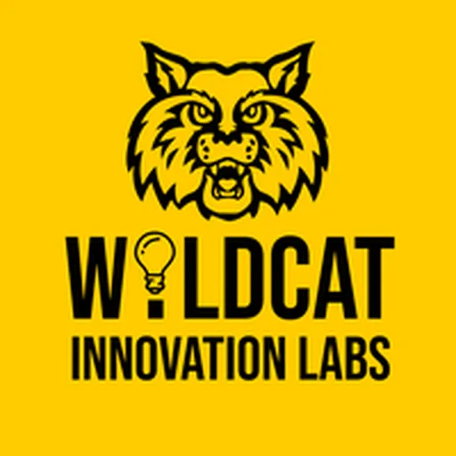</span><span class="vw-text"><span class="vw-name">WildCat Innovation Labs (CIT-U TBI)</span><span class="vw-sub">Cebu Institute of Technology – University · Region VII</span></span></button>
      <button class="vw-item has-rem" data-src="wpu-atbi.html" data-k="wpu-atbi (western philippines university agri-aqua technology business incubator) tbi western philippines university (puerto princesa campus, abba r&amp;d cente" data-f1="TBI" data-f2="Region IV-B" title="WPU-ATBI (Western Philippines University Agri-Aqua Technology Business Incubator)

⚠ Internal remarks (not shown on the page):
• Verified July 10, 2026. Merged into a single record on the user&#x27;s instruction — the two brands are operated by the same people. Both logos pulled from their respective Facebook profile pictures (WPU-ATBI 2048×1638; HATCH 1500×1500) and processed to 1000×1000 transparent PNG. Only one email is published across both pages; a second brand-specific address could not be found and was not invented. The funder attribution for HATCH is inferred from the ACEF logo on its posts and the da element of the shared address — worth confirming directly."><span class="vw-thumb">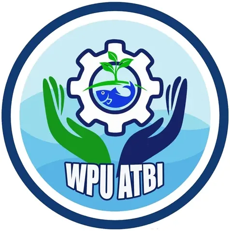</span><span class="vw-text"><span class="vw-name">WPU-ATBI (Western Philippines University Agri-Aqua Technology Business Incubator)<span class="vw-flag" aria-label="has internal remarks">⚠</span></span><span class="vw-sub">Western Philippines University (Puerto Princesa Campus, ABBA R&amp;D Cente</span></span></button>
      <button class="vw-item" data-src="wvsu-binhi-technology-business-incubator.html" data-k="wvsu binhi technology business incubator (tbi) tbi west visayas state university (wvsu) · region vi" data-f1="TBI" data-f2="Region VI" title="WVSU BINHI Technology Business Incubator (TBI)"><span class="vw-thumb"></span><span class="vw-text"><span class="vw-name">WVSU BINHI Technology Business Incubator (TBI)</span><span class="vw-sub">West Visayas State University (WVSU) · Region VI</span></span></button>
      <div class="vw-group">Fabrication Laboratory (FabLab) · 43</div>
      <button class="vw-item" data-src="advanced-manufacturing-center-western-visayas.html" data-k="advanced manufacturing center (amcen) western visayas fablab west visayas state university (wvsu) · region vi" data-f1="FabLab" data-f2="Region VI" title="Advanced Manufacturing Center (AMCen) Western Visayas"><span class="vw-thumb"></span><span class="vw-text"><span class="vw-name">Advanced Manufacturing Center (AMCen) Western Visayas</span><span class="vw-sub">West Visayas State University (WVSU) · Region VI</span></span></button>
      <button class="vw-item" data-src="aklan-innovators-hub-fablab.html" data-k="aklan innovators hub fablab fablab aklan state university (asu) · region vi" data-f1="FabLab" data-f2="Region VI" title="Aklan Innovators Hub FabLab"><span class="vw-thumb"></span><span class="vw-text"><span class="vw-name">Aklan Innovators Hub FabLab</span><span class="vw-sub">Aklan State University (ASU) · Region VI</span></span></button>
      <button class="vw-item" data-src="biscast-fablab.html" data-k="biscast fablab fablab bicol state college of applied sciences &amp; technology · region v" data-f1="FabLab" data-f2="Region V" title="BISCAST FabLab"><span class="vw-thumb"></span><span class="vw-text"><span class="vw-name">BISCAST FabLab</span><span class="vw-sub">Bicol State College of Applied Sciences &amp; Technology · Region V</span></span></button>
      <button class="vw-item" data-src="bulsu-fablab-center.html" data-k="bulsu fablab center fablab bulacan state university · region iii" data-f1="FabLab" data-f2="Region III" title="BulSU FABLAB Center"><span class="vw-thumb"></span><span class="vw-text"><span class="vw-name">BulSU FABLAB Center</span><span class="vw-sub">Bulacan State University · Region III</span></span></button>
      <button class="vw-item" data-src="capiz-innovation-center-fablab.html" data-k="capiz innovation center fablab fablab provincial govt of capiz · region vi" data-f1="FabLab" data-f2="Region VI" title="Capiz Innovation Center FabLab"><span class="vw-thumb"></span><span class="vw-text"><span class="vw-name">Capiz Innovation Center FabLab</span><span class="vw-sub">Provincial Govt of Capiz · Region VI</span></span></button>
      <button class="vw-item has-rem" data-src="cit-u-ai-fablab.html" data-k="cit-u ai fablab fablab cebu institute of technology-university · region vii" data-f1="FabLab" data-f2="Region VII" title="CIT-U AI FabLab

⚠ Internal remarks (not shown on the page):
• ✅ Logo corrected July 13, 2026. The row previously displayed the CIT-University institutional seal (the maroon gear-and-triangle crest). Replaced with the FabLab&#x27;s own mark — the maroon open-book / &quot;CIT UNIVERSITY FABLAB&quot; logo from its official page. Facebook (CITUAIFABLAB) and email (makerspace@cit.edu) were already correct and confirmed on the page&#x27;s contact block. Address confirmed: N. Bacalso Avenue, Cebu City 6000.
• ⚠️ Logo is low-resolution. The page&#x27;s full-size profile photo wouldn&#x27;t open in Facebook&#x27;s viewer, so the mark was taken at its largest exposed rendition (200×200) and upscaled. It&#x27;s the correct logo but soft at full size (fine at Notion&#x27;s display size). A crisp version would need the original file from the FabLab."><span class="vw-thumb"></span><span class="vw-text"><span class="vw-name">CIT-U AI FabLab<span class="vw-flag" aria-label="has internal remarks">⚠</span></span><span class="vw-sub">Cebu Institute of Technology-University · Region VII</span></span></button>
      <button class="vw-item" data-src="cnsc-fabmanlab.html" data-k="cnsc fabmanlab (camarines norte state college) fablab camarines norte state college (cnsc) · region v" data-f1="FabLab" data-f2="Region V" title="CNSC FABMANLAB (Camarines Norte State College)"><span class="vw-thumb">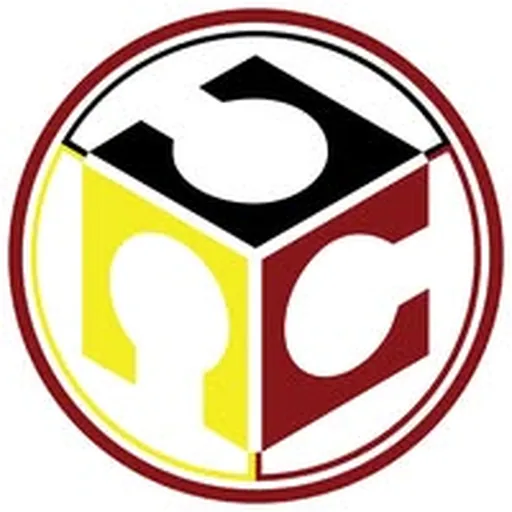</span><span class="vw-text"><span class="vw-name">CNSC FABMANLAB (Camarines Norte State College)</span><span class="vw-sub">Camarines Norte State College (CNSC) · Region V</span></span></button>
      <button class="vw-item" data-src="digifab-lgu-bogo-city.html" data-k="digifab – lgu bogo city fablab lgu bogo · region vii" data-f1="FabLab" data-f2="Region VII" title="DigiFab – LGU Bogo City"><span class="vw-thumb"></span><span class="vw-text"><span class="vw-name">DigiFab – LGU Bogo City</span><span class="vw-sub">LGU Bogo · Region VII</span></span></button>
      <button class="vw-item" data-src="digihub-fablab-davao.html" data-k="digihub fablab davao fablab university of southeastern philippines (usep) · region xi" data-f1="FabLab" data-f2="Region XI" title="DIGIHUB FabLab Davao"><span class="vw-thumb"></span><span class="vw-text"><span class="vw-name">DIGIHUB FabLab Davao</span><span class="vw-sub">University of Southeastern Philippines (USeP) · Region XI</span></span></button>
      <button class="vw-item has-rem" data-src="dlsu-d-ceat-center-of-technology.html" data-k="dlsu-d ceat center of technology (ccti fab lab) fablab de la salle university-dasmariñas · region iv-a" data-f1="FabLab" data-f2="Region IV-A" title="DLSU-D CEAT Center of Technology (CCTI Fab Lab)

⚠ Internal remarks (not shown on the page):
• ✅ Facebook, email &amp; logo corrected July 14, 2026. The row previously pointed at the DLSU-D CEAT college page (dlsudceatofficial) and had no email. The lab has its own page — CEAT Center for Technological Innovation (CCTI), &quot;the official page of DLSU-D&#x27;s CEAT Center for Technological Innovation&quot; — which lists cctifablab@dlsud.edu.ph (also a YouTube channel, CCTIFABLAB, and 0917 609 3432). Facebook and email repointed; the InnoLab&#x27;s operating brand is CCTI. Address confirmed: De La Salle University-Dasmariñas (DBB-B), Dasmariñas 4115.
• ⚠️ Logo is a reconstructed light-background version. The page&#x27;s profile logo is white-on-a-dark-photographic-background, which can&#x27;t be cleanly extracted and would vanish on white. I isolated the white CCTI mark and recoloured it to the brand navy on a white ground. It&#x27;s faithful and legible, with slight edge-fade on the final letters of &quot;TECHNOLOGICAL / INNOVATION&quot; inherited from the source. A crisp official file (the blue-on-white version they use in their own graphics) would be an improvement if the lab can share it."><span class="vw-thumb">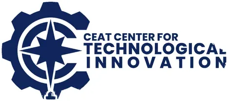</span><span class="vw-text"><span class="vw-name">DLSU-D CEAT Center of Technology (CCTI Fab Lab)<span class="vw-flag" aria-label="has internal remarks">⚠</span></span><span class="vw-sub">De La Salle University-Dasmariñas · Region IV-A</span></span></button>
      <button class="vw-item" data-src="fablab-bicol-bicol-university.html" data-k="fablab bicol — bicol university fablab bicol university (bucit) · region v" data-f1="FabLab" data-f2="Region V" title="FabLab Bicol — Bicol University"><span class="vw-thumb">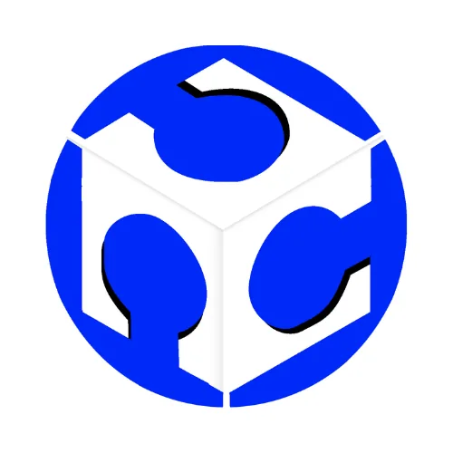</span><span class="vw-text"><span class="vw-name">FabLab Bicol — Bicol University</span><span class="vw-sub">Bicol University (BUCIT) · Region V</span></span></button>
      <button class="vw-item" data-src="fablab-bohol.html" data-k="fablab bohol fablab bohol island state university · region vii" data-f1="FabLab" data-f2="Region VII" title="FabLab Bohol"><span class="vw-thumb"></span><span class="vw-text"><span class="vw-name">FabLab Bohol</span><span class="vw-sub">Bohol Island State University · Region VII</span></span></button>
      <button class="vw-item" data-src="fablab-caraga.html" data-k="fablab caraga fablab caraga state university · region xiii" data-f1="FabLab" data-f2="Region XIII" title="FabLab Caraga"><span class="vw-thumb"></span><span class="vw-text"><span class="vw-name">FabLab Caraga</span><span class="vw-sub">Caraga State University · Region XIII</span></span></button>
      <button class="vw-item" data-src="fablab-ctu-argao.html" data-k="fablab ctu-argao fablab cebu technological university – argao · region vii" data-f1="FabLab" data-f2="Region VII" title="FabLab CTU-Argao"><span class="vw-thumb">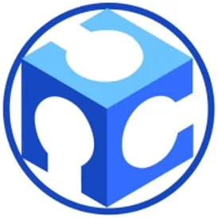</span><span class="vw-text"><span class="vw-name">FabLab CTU-Argao</span><span class="vw-sub">Cebu Technological University – Argao · Region VII</span></span></button>
      <button class="vw-item" data-src="fablab-ctu-danao.html" data-k="fablab ctu-danao fablab cebu technological university – danao · region vii" data-f1="FabLab" data-f2="Region VII" title="FabLab CTU-Danao"><span class="vw-thumb"></span><span class="vw-text"><span class="vw-name">FabLab CTU-Danao</span><span class="vw-sub">Cebu Technological University – Danao · Region VII</span></span></button>
      <button class="vw-item" data-src="fablab-ctu-tuburan.html" data-k="fablab ctu-tuburan fablab cebu technological university – tuburan · region vii" data-f1="FabLab" data-f2="Region VII" title="FabLab CTU-Tuburan"><span class="vw-thumb">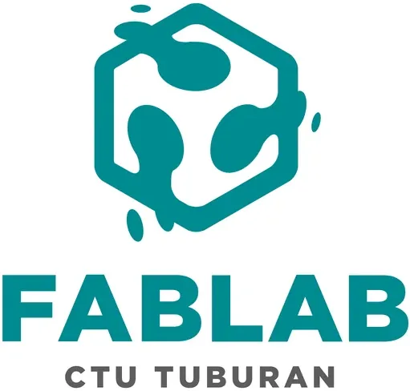</span><span class="vw-text"><span class="vw-name">FabLab CTU-Tuburan</span><span class="vw-sub">Cebu Technological University – Tuburan · Region VII</span></span></button>
      <button class="vw-item" data-src="fablab-dapitan.html" data-k="fablab dapitan fablab jose rizal memorial state university (jrmsu) · region ix" data-f1="FabLab" data-f2="Region IX" title="FabLab Dapitan"><span class="vw-thumb"></span><span class="vw-text"><span class="vw-name">FabLab Dapitan</span><span class="vw-sub">Jose Rizal Memorial State University (JRMSU) · Region IX</span></span></button>
      <button class="vw-item" data-src="fablab-dhvtsu.html" data-k="fablab dhvtsu fablab pampanga state university (formerly don honorio ventura technological " data-f1="FabLab" data-f2="Region III" title="FabLab DHVTSU"><span class="vw-thumb">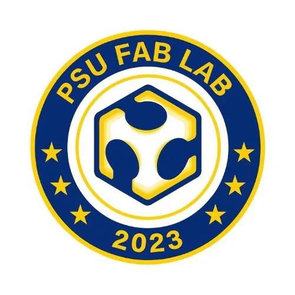</span><span class="vw-text"><span class="vw-name">FabLab DHVTSU</span><span class="vw-sub">Pampanga State University (formerly Don Honorio Ventura Technological </span></span></button>
      <button class="vw-item" data-src="fablab-eastern-visayas.html" data-k="fablab eastern visayas (pshs-evc) fablab philippine science hs – eastern visayas campus · region viii" data-f1="FabLab" data-f2="Region VIII" title="FabLab Eastern Visayas (PSHS-EVC)"><span class="vw-thumb"></span><span class="vw-text"><span class="vw-name">FabLab Eastern Visayas (PSHS-EVC)</span><span class="vw-sub">Philippine Science HS – Eastern Visayas Campus · Region VIII</span></span></button>
      <button class="vw-item" data-src="fablab-marawi.html" data-k="fablab marawi fablab mindanao state university – main · barmm" data-f1="FabLab" data-f2="BARMM" title="FabLab Marawi"><span class="vw-thumb"></span><span class="vw-text"><span class="vw-name">FabLab Marawi</span><span class="vw-sub">Mindanao State University – Main · BARMM</span></span></button>
      <button class="vw-item" data-src="fablab-negros-norsu.html" data-k="fablab negros — norsu fablab negros oriental state university · region xviii: nir" data-f1="FabLab" data-f2="Region XVIII: NIR" title="FabLab Negros — NORSU"><span class="vw-thumb"></span><span class="vw-text"><span class="vw-name">FabLab Negros — NORSU</span><span class="vw-sub">Negros Oriental State University · Region XVIII: NIR</span></span></button>
      <button class="vw-item" data-src="fablab-pagadian-jhcsc.html" data-k="fablab pagadian — jhcsc fablab josefina h. cerilles state college · region ix" data-f1="FabLab" data-f2="Region IX" title="FabLab Pagadian — JHCSC"><span class="vw-thumb"></span><span class="vw-text"><span class="vw-name">FabLab Pagadian — JHCSC</span><span class="vw-sub">Josefina H. Cerilles State College · Region IX</span></span></button>
      <button class="vw-item has-rem" data-src="fablab-pffi.html" data-k="fablab pffi fablab philippine footwear federation, inc. (pffi) · ncr" data-f1="FabLab" data-f2="NCR" title="FabLab PFFI

⚠ Internal remarks (not shown on the page):
• ⚠️ PFFI is confirmed as a DTI-listed FabLab / Shared Service Facility cooperator, but neither DTI nor PFFI has published its equipment and service list. Treat the capabilities below as indicative and confirm directly with PFFI."><span class="vw-thumb">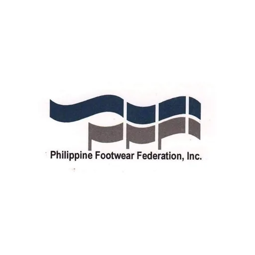</span><span class="vw-text"><span class="vw-name">FabLab PFFI<span class="vw-flag" aria-label="has internal remarks">⚠</span></span><span class="vw-sub">Philippine Footwear Federation, Inc. (PFFI) · NCR</span></span></button>
      <button class="vw-item" data-src="fablab-santiago-city.html" data-k="fablab santiago city fablab lgu-santiago city · region ii" data-f1="FabLab" data-f2="Region II" title="FabLab Santiago City"><span class="vw-thumb"></span><span class="vw-text"><span class="vw-name">FabLab Santiago City</span><span class="vw-sub">LGU-Santiago City · Region II</span></span></button>
      <button class="vw-item" data-src="fablab-siquijor.html" data-k="fablab siquijor fablab siquijor state college · region xviii: nir" data-f1="FabLab" data-f2="Region XVIII: NIR" title="FabLab Siquijor"><span class="vw-thumb"></span><span class="vw-text"><span class="vw-name">FabLab Siquijor</span><span class="vw-sub">Siquijor State College · Region XVIII: NIR</span></span></button>
      <button class="vw-item" data-src="fablab-slu-saint-louis-university.html" data-k="fablab slu — saint louis university fablab saint louis university (slu-eissif) · car" data-f1="FabLab" data-f2="CAR" title="FabLab SLU — Saint Louis University"><span class="vw-thumb"></span><span class="vw-text"><span class="vw-name">FabLab SLU — Saint Louis University</span><span class="vw-sub">Saint Louis University (SLU-EISSIF) · CAR</span></span></button>
      <button class="vw-item" data-src="fablab-up-cebu.html" data-k="fablab up-cebu fablab up cebu · region vii" data-f1="FabLab" data-f2="Region VII" title="FabLab UP-Cebu"><span class="vw-thumb"></span><span class="vw-text"><span class="vw-name">FabLab UP-Cebu</span><span class="vw-sub">UP Cebu · Region VII</span></span></button>
      <button class="vw-item" data-src="hnu-fablab-center-for-innovation.html" data-k="hnu fablab – center for innovation fablab holy name university · region vii" data-f1="FabLab" data-f2="Region VII" title="HNU FabLab – Center for Innovation"><span class="vw-thumb"></span><span class="vw-text"><span class="vw-name">HNU FabLab – Center for Innovation</span><span class="vw-sub">Holy Name University · Region VII</span></span></button>
      <button class="vw-item" data-src="idea-fablab-antipolo-institute-of-technology.html" data-k="idea fablab — antipolo institute of technology fablab antipolo institute of technology · region iv-a" data-f1="FabLab" data-f2="Region IV-A" title="IDEA FabLab — Antipolo Institute of Technology"><span class="vw-thumb"></span><span class="vw-text"><span class="vw-name">IDEA FabLab — Antipolo Institute of Technology</span><span class="vw-sub">Antipolo Institute of Technology · Region IV-A</span></span></button>
      <button class="vw-item" data-src="isat-u-fablab.html" data-k="isat-u fablab fablab iloilo science &amp; technology university · region vi" data-f1="FabLab" data-f2="Region VI" title="ISAT-U FabLab"><span class="vw-thumb">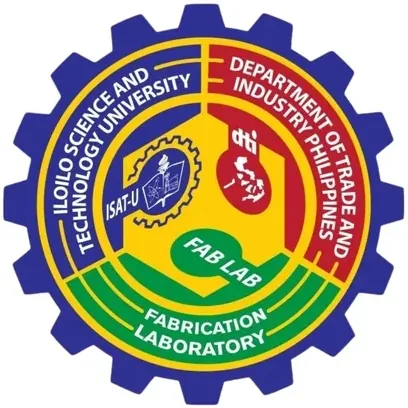</span><span class="vw-text"><span class="vw-name">ISAT-U FabLab</span><span class="vw-sub">Iloilo Science &amp; Technology University · Region VI</span></span></button>
      <button class="vw-item" data-src="likha-fablab.html" data-k="likha fablab fablab batangas state university · region iv-a" data-f1="FabLab" data-f2="Region IV-A" title="LIKHA FabLab"><span class="vw-thumb"></span><span class="vw-text"><span class="vw-name">LIKHA FabLab</span><span class="vw-sub">Batangas State University · Region IV-A</span></span></button>
      <button class="vw-item has-rem" data-src="mmsu-farm-a-lab.html" data-k="mmsu farm-a lab (fabrication and automation research for the mechanization of agriculture) fablab mariano marcos state university (mmsu) · region i" data-f1="FabLab" data-f2="Region I" title="MMSU FARM-A Lab (Fabrication and Automation Research for the Mechanization of Agriculture)

⚠ Internal remarks (not shown on the page):
• Operating status flagged “Uncertain” — confirm the centre is active before relying on this listing.
• ⚠️ Planned capabilities. No public source confirms these services are yet operational — MMSU&#x27;s only announcement describes FARM-A Lab as a laboratory still to be built. Confirm with MMSU before relying on this listing."><span class="vw-thumb"></span><span class="vw-text"><span class="vw-name">MMSU FARM-A Lab (Fabrication and Automation Research for the Mechanization of Agriculture)<span class="vw-flag" aria-label="has internal remarks">⚠</span></span><span class="vw-sub">Mariano Marcos State University (MMSU) · Region I</span></span></button>
      <button class="vw-item" data-src="msu-iit-fablab-mindanao.html" data-k="msu-iit fablab mindanao fablab msu – iligan institute of technology (msu-iit) · region x" data-f1="FabLab" data-f2="Region X" title="MSU-IIT FabLab Mindanao"><span class="vw-thumb"></span><span class="vw-text"><span class="vw-name">MSU-IIT FabLab Mindanao</span><span class="vw-sub">MSU – Iligan Institute of Technology (MSU-IIT) · Region X</span></span></button>
      <button class="vw-item has-rem" data-src="pandayan-ng-bayan-metalworks-fabrication-center.html" data-k="pandayan ng bayan — metalworks &amp; fabrication center fablab central philippines state university (cpsu) — implementing agency, wit" data-f1="FabLab" data-f2="Region XVIII: NIR" title="Pandayan ng Bayan — Metalworks &amp; Fabrication Center

⚠ Internal remarks (not shown on the page):
• 🏛️ Corrected from the prior record. This row previously named the Provincial Government of Negros Occidental as host and pointed at the provincial government&#x27;s Facebook page and email. Per DOST Region VI, the project is a university-led CEST initiative: CPSU is the implementing agency, and the provincial government is not the operator. Facebook, email, host institution, and logo have been repointed to CPSU. The row now carries the CPSU institutional seal, as the project has no separate published logo of its own.
• Reworked July 13, 2026. Host corrected from the provincial government to CPSU (implementing agency) per user instruction and DOST Region VI reporting. Component structure and lead SUCs verified from DOST VI&#x27;s launch coverage; the prior record listed only four SUCs and omitted NONESCOST. Contact set to CPSU&#x27;s Public Information Office (cpsu_main@cpsu.edu.ph); logo is the CPSU seal, cropped from the university&#x27;s own header lockup (crisp, transparent). CPSU main campus is in Kabankalan City, but the project&#x27;s scope is province-wide."><span class="vw-thumb"></span><span class="vw-text"><span class="vw-name">Pandayan ng Bayan — Metalworks &amp; Fabrication Center<span class="vw-flag" aria-label="has internal remarks">⚠</span></span><span class="vw-sub">Central Philippines State University (CPSU) — implementing agency, wit</span></span></button>
      <button class="vw-item" data-src="pshs-clc-innovation-center.html" data-k="pshs-clc innovation center fablab philippine science hs – central luzon campus · region iii" data-f1="FabLab" data-f2="Region III" title="PSHS-CLC Innovation Center"><span class="vw-thumb"></span><span class="vw-text"><span class="vw-name">PSHS-CLC Innovation Center</span><span class="vw-sub">Philippine Science HS – Central Luzon Campus · Region III</span></span></button>
      <button class="vw-item" data-src="pttc-digifab.html" data-k="pttc digifab fablab philippine trade training center (dti) · ncr" data-f1="FabLab" data-f2="NCR" title="PTTC DigiFab"><span class="vw-thumb"></span><span class="vw-text"><span class="vw-name">PTTC DigiFab</span><span class="vw-sub">Philippine Trade Training Center (DTI) · NCR</span></span></button>
      <button class="vw-item has-rem" data-src="sorsogon-pili-fablab.html" data-k="sorsogon pili fablab (sorsu) fablab sorsogon state university · region v" data-f1="FabLab" data-f2="Region V" title="Sorsogon PILI FabLab (SorSU)

⚠ Internal remarks (not shown on the page):
• ✅ Facebook &amp; logo corrected July 13, 2026. This row previously pointed at SorSU&#x27;s institutional page and carried the university&#x27;s institutional seal as its logo. The lab has its own presence — Sorsogon Pili FabLab, tagline &quot;Connecting makers, artists &amp; entrepreneurs with digital fabrication to make a positive social impact,&quot; active (posting July 2026) and operating since Jan 2019. Facebook repointed and the seal replaced with the lab&#x27;s own triangle mark. Emailssc@sorsu.edu.phleft unchanged — the page is set up as a personal profile and publishes no email, and the SSC (Shared Service Center) address is the correct operational contact since the FabLab runs through the SSC.
• ⚠️ Logo is low-resolution. The FabLab&#x27;s page is a personal profile whose full-size profile photo won&#x27;t open in Facebook&#x27;s viewer, so the mark was captured at its largest exposed rendition (200×200) and upscaled. It&#x27;s the correct, current logo but soft at full size (fine at Notion&#x27;s display size). A crisp version would need the original file from the FabLab, or for them to convert the profile to a Page so the full-res picture becomes accessible."><span class="vw-thumb"></span><span class="vw-text"><span class="vw-name">Sorsogon PILI FabLab (SorSU)<span class="vw-flag" aria-label="has internal remarks">⚠</span></span><span class="vw-sub">Sorsogon State University · Region V</span></span></button>
      <button class="vw-item" data-src="up-mindanao-corsair-ai-robotics-fablab.html" data-k="up mindanao corsair — ai &amp; robotics fablab fablab university of the philippines mindanao (up mindanao) · region xi" data-f1="FabLab" data-f2="Region XI" title="UP Mindanao CORSAIR — AI &amp; Robotics FabLab"><span class="vw-thumb"></span><span class="vw-text"><span class="vw-name">UP Mindanao CORSAIR — AI &amp; Robotics FabLab</span><span class="vw-sub">University of the Philippines Mindanao (UP Mindanao) · Region XI</span></span></button>
      <button class="vw-item" data-src="up-cfa-fablab.html" data-k="up-cfa fablab fablab up diliman – college of fine arts · ncr" data-f1="FabLab" data-f2="NCR" title="UP-CFA FabLab"><span class="vw-thumb"></span><span class="vw-text"><span class="vw-name">UP-CFA FabLab</span><span class="vw-sub">UP Diliman – College of Fine Arts · NCR</span></span></button>
      <button class="vw-item" data-src="usm-kcc-fablab.html" data-k="usm-kcc fablab fablab university of southern mindanao – kidapawan city campus · region xii" data-f1="FabLab" data-f2="Region XII" title="USM-KCC FabLab"><span class="vw-thumb">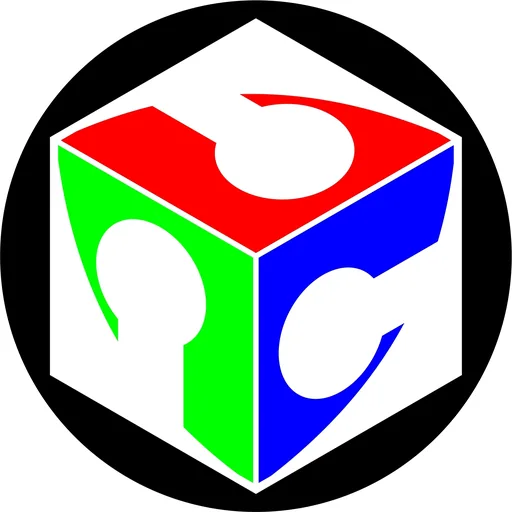</span><span class="vw-text"><span class="vw-name">USM-KCC FabLab</span><span class="vw-sub">University of Southern Mindanao – Kidapawan City Campus · Region XII</span></span></button>
      <button class="vw-item" data-src="ustp-cdo-design-engineering-and-fabrication-laboratory.html" data-k="ustp-cdo design engineering and fabrication laboratory (fablab) fablab university of science and technology of southern philippines (ustp) · " data-f1="FabLab" data-f2="Region X" title="USTP-CDO Design Engineering and Fabrication Laboratory (FabLab)"><span class="vw-thumb"></span><span class="vw-text"><span class="vw-name">USTP-CDO Design Engineering and Fabrication Laboratory (FabLab)</span><span class="vw-sub">University of Science and Technology of Southern Philippines (USTP) · </span></span></button>
      <button class="vw-item has-rem" data-src="wmsu-advanced-manufacturing-center-ricme.html" data-k="wmsu advanced manufacturing center (amcen) / ricme (ic) fablab western mindanao state university (wmsu) · region ix" data-f1="FabLab" data-f2="Region IX" title="WMSU Advanced Manufacturing Center (AMCen) / RICME (IC)

⚠ Internal remarks (not shown on the page):
• ✅ Facebook, email &amp; logo corrected July 13, 2026. This row previously pointed at WMSU&#x27;s institutional page (wmsu.edu.ph) and carried the university switchboard wmsu@wmsu.edu.ph. The centre has its own — Research and Innovation Center for Metals and Engineering RICME — which lists its direct address, ricme@wmsu.edu.ph. Facebook, email, and logo (the WMSU 2024 RICME emblem, 2048×2047) all repointed to the centre. Address confirmed there: RICME Building, College of Engineering, WMSU, Zamboanga City 7000. The page&#x27;s own posts corroborate the body&#x27;s account of the AMCen launch (&quot;AMCEN is truly in full swing,&quot; Feb 2026, thanking DOST Region 9)."><span class="vw-thumb">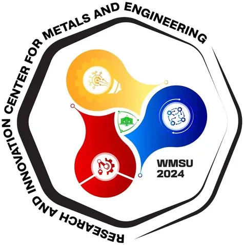</span><span class="vw-text"><span class="vw-name">WMSU Advanced Manufacturing Center (AMCen) / RICME (IC)<span class="vw-flag" aria-label="has internal remarks">⚠</span></span><span class="vw-sub">Western Mindanao State University (WMSU) · Region IX</span></span></button>
      <button class="vw-item" data-src="zampen-fablab-zcspc.html" data-k="zampen fablab — zcspc fablab zamboanga city state polytechnic college · region ix" data-f1="FabLab" data-f2="Region IX" title="Zampen FabLab — ZCSPC"><span class="vw-thumb">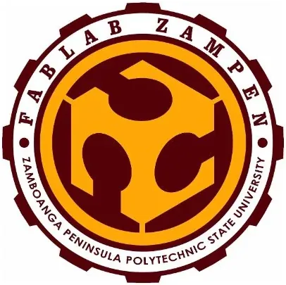</span><span class="vw-text"><span class="vw-name">Zampen FabLab — ZCSPC</span><span class="vw-sub">Zamboanga City State Polytechnic College · Region IX</span></span></button>
      <div class="vw-group">Food Innovation Center · 26</div>
      <button class="vw-item" data-src="asscat-agri-food-processing-and-innovation-center.html" data-k="asscat agri-food processing and innovation center fic agusan del sur state university (formerly asscat) · region xiii" data-f1="FIC" data-f2="Region XIII" title="ASSCAT Agri-Food Processing and Innovation Center"><span class="vw-thumb"></span><span class="vw-text"><span class="vw-name">ASSCAT Agri-Food Processing and Innovation Center</span><span class="vw-sub">Agusan del Sur State University (formerly ASSCAT) · Region XIII</span></span></button>
      <button class="vw-item" data-src="bicol-regional-food-innovation-commercialization-center-bicol-university.html" data-k="bicol regional food innovation &amp; commercialization center (brficc) — bicol university fic bicol university · region v" data-f1="FIC" data-f2="Region V" title="Bicol Regional Food Innovation &amp; Commercialization Center (BRFICC) — Bicol University"><span class="vw-thumb"></span><span class="vw-text"><span class="vw-name">Bicol Regional Food Innovation &amp; Commercialization Center (BRFICC) — Bicol University</span><span class="vw-sub">Bicol University · Region V</span></span></button>
      <button class="vw-item" data-src="cagayan-valley-food-innovation-center.html" data-k="cagayan valley food innovation center (fic) fic cagayan state university · region ii" data-f1="FIC" data-f2="Region II" title="Cagayan Valley Food Innovation Center (FIC)"><span class="vw-thumb">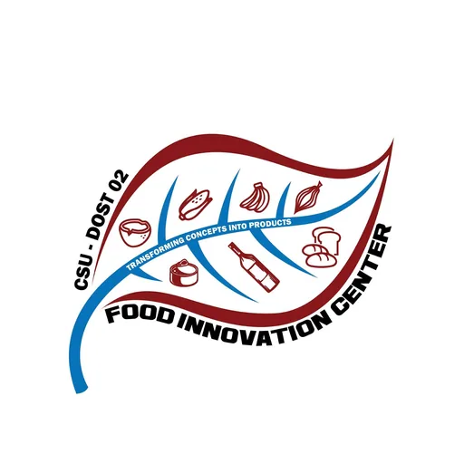</span><span class="vw-text"><span class="vw-name">Cagayan Valley Food Innovation Center (FIC)</span><span class="vw-sub">Cagayan State University · Region II</span></span></button>
      <button class="vw-item" data-src="calabarzon-food-solutions-hub-c-fosh.html" data-k="calabarzon food solutions hub — c-fosh (lspu fic) fic laguna state polytechnic university (lspu) · region iv-a" data-f1="FIC" data-f2="Region IV-A" title="CALABARZON Food Solutions Hub — C-FoSH (LSPU FIC)"><span class="vw-thumb">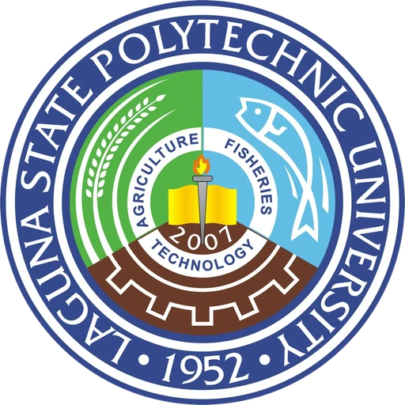</span><span class="vw-text"><span class="vw-name">CALABARZON Food Solutions Hub — C-FoSH (LSPU FIC)</span><span class="vw-sub">Laguna State Polytechnic University (LSPU) · Region IV-A</span></span></button>
      <button class="vw-item has-rem" data-src="caraga-fic-surigao-del-norte-state-university.html" data-k="caraga fic — surigao del norte state university (snsu) fic surigao del norte state university (snsu) · region xiii" data-f1="FIC" data-f2="Region XIII" title="Caraga FIC — Surigao del Norte State University (SNSU)

⚠ Internal remarks (not shown on the page):
• ✅ Facebook &amp; logo corrected July 13, 2026. This row previously pointed at SNSU&#x27;s institutional page (SNSUOfficial). The centre has its own — SNSU Food Innovation Center — self-described as the FIC, tagline &quot;Innovate. Incubate. Elevate. Transform.&quot; The email already on file, snsufoodinnovationcenter@gmail.com, is the centre&#x27;s own and is confirmed on that page, so it was left unchanged. Logo replaced with the official FIC emblem the centre published on July 7, 2026 (post title: &quot;Official Logo of the Food Innovation Center (FIC) Surigao del Norte State University&quot;). One correction: the page lists its location as Magpayang, Mainit, Surigao del Norte 8407, not Surigao City — City field updated accordingly."><span class="vw-thumb"></span><span class="vw-text"><span class="vw-name">Caraga FIC — Surigao del Norte State University (SNSU)<span class="vw-flag" aria-label="has internal remarks">⚠</span></span><span class="vw-sub">Surigao del Norte State University (SNSU) · Region XIII</span></span></button>
      <button class="vw-item" data-src="caraga-food-innovation-center.html" data-k="caraga food innovation center (fic) fic caraga state university (csu) · region xiii" data-f1="FIC" data-f2="Region XIII" title="Caraga Food Innovation Center (FIC)"><span class="vw-thumb">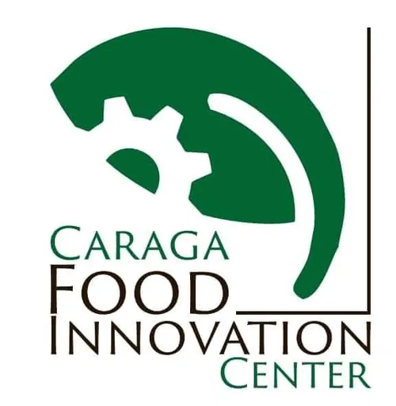</span><span class="vw-text"><span class="vw-name">Caraga Food Innovation Center (FIC)</span><span class="vw-sub">Caraga State University (CSU) · Region XIII</span></span></button>
      <button class="vw-item" data-src="central-visayas-food-innovation-center-cit-u.html" data-k="central visayas food innovation center — cit-u fic cebu institute of technology – university (cit-u) · region vii" data-f1="FIC" data-f2="Region VII" title="Central Visayas Food Innovation Center — CIT-U"><span class="vw-thumb"></span><span class="vw-text"><span class="vw-name">Central Visayas Food Innovation Center — CIT-U</span><span class="vw-sub">Cebu Institute of Technology – University (CIT-U) · Region VII</span></span></button>
      <button class="vw-item" data-src="ctu-center-for-food-development-technopreneurship.html" data-k="ctu center for food development &amp; technopreneurship (ifsit) (ic) fic cebu technological university (ctu) · region vii" data-f1="FIC" data-f2="Region VII" title="CTU Center for Food Development &amp; Technopreneurship (IFSIT) (IC)"><span class="vw-thumb">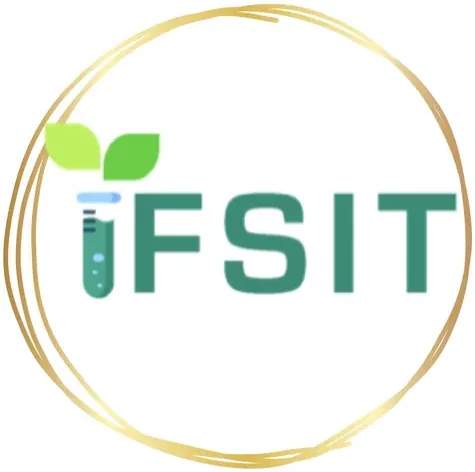</span><span class="vw-text"><span class="vw-name">CTU Center for Food Development &amp; Technopreneurship (IFSIT) (IC)</span><span class="vw-sub">Cebu Technological University (CTU) · Region VII</span></span></button>
      <button class="vw-item" data-src="davao-food-processing-innovation-center-philippine-women-s-college-of-davao.html" data-k="davao food processing innovation center — philippine women&#x27;s college of davao fic philippine women&#x27;s college of davao · region xi" data-f1="FIC" data-f2="Region XI" title="Davao Food Processing Innovation Center — Philippine Women&#x27;s College of Davao"><span class="vw-thumb"></span><span class="vw-text"><span class="vw-name">Davao Food Processing Innovation Center — Philippine Women&#x27;s College of Davao</span><span class="vw-sub">Philippine Women&#x27;s College of Davao · Region XI</span></span></button>
      <button class="vw-item" data-src="dost-mimaropa-food-innovation-center.html" data-k="dost-mimaropa food innovation center (minsu) fic mindoro state university (minsu) · region iv-b" data-f1="FIC" data-f2="Region IV-B" title="DOST-MIMAROPA Food Innovation Center (MinSU)"><span class="vw-thumb"></span><span class="vw-text"><span class="vw-name">DOST-MIMAROPA Food Innovation Center (MinSU)</span><span class="vw-sub">Mindoro State University (MinSU) · Region IV-B</span></span></button>
      <button class="vw-item" data-src="eastern-visayas-fic-eastern-visayas-state-university.html" data-k="eastern visayas fic (ev-fic) — eastern visayas state university fic eastern visayas state university · region viii" data-f1="FIC" data-f2="Region VIII" title="Eastern Visayas FIC (EV-FIC) — Eastern Visayas State University"><span class="vw-thumb">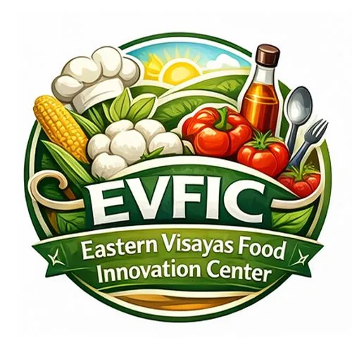</span><span class="vw-text"><span class="vw-name">Eastern Visayas FIC (EV-FIC) — Eastern Visayas State University</span><span class="vw-sub">Eastern Visayas State University · Region VIII</span></span></button>
      <button class="vw-item" data-src="fic-bulacan-state-university.html" data-k="fic — bulacan state university fic bulacan state university · region iii" data-f1="FIC" data-f2="Region III" title="FIC — Bulacan State University"><span class="vw-thumb">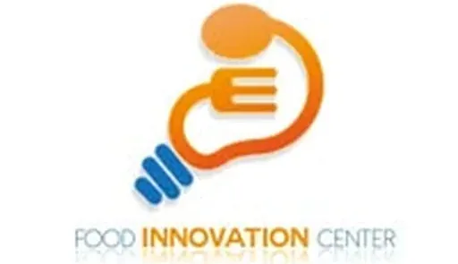</span><span class="vw-text"><span class="vw-name">FIC — Bulacan State University</span><span class="vw-sub">Bulacan State University · Region III</span></span></button>
      <button class="vw-item" data-src="fic-isabela-state-university.html" data-k="fic — isabela state university (cauayan campus) fic isabela state university · region ii" data-f1="FIC" data-f2="Region II" title="FIC — Isabela State University (Cauayan Campus)"><span class="vw-thumb">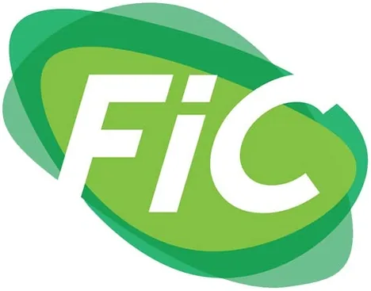</span><span class="vw-text"><span class="vw-name">FIC — Isabela State University (Cauayan Campus)</span><span class="vw-sub">Isabela State University · Region II</span></span></button>
      <button class="vw-item" data-src="food-innovation-center-batangas-state-university.html" data-k="food innovation center – batangas state university fic batangas state university (the national engineering university) · regi" data-f1="FIC" data-f2="Region IV-A" title="Food Innovation Center – Batangas State University"><span class="vw-thumb"></span><span class="vw-text"><span class="vw-name">Food Innovation Center – Batangas State University</span><span class="vw-sub">Batangas State University (The National Engineering University) · Regi</span></span></button>
      <button class="vw-item" data-src="food-innovation-center-ctu-tuburan.html" data-k="food innovation center — ctu tuburan fic cebu technological university · region vii" data-f1="FIC" data-f2="Region VII" title="Food Innovation Center — CTU Tuburan"><span class="vw-thumb"></span><span class="vw-text"><span class="vw-name">Food Innovation Center — CTU Tuburan</span><span class="vw-sub">Cebu Technological University · Region VII</span></span></button>
      <button class="vw-item" data-src="food-research-development-center-central-mindanao-university.html" data-k="food research &amp; development center — central mindanao university fic central mindanao university (cmu) · region x" data-f1="FIC" data-f2="Region X" title="Food Research &amp; Development Center — Central Mindanao University"><span class="vw-thumb"></span><span class="vw-text"><span class="vw-name">Food Research &amp; Development Center — Central Mindanao University</span><span class="vw-sub">Central Mindanao University (CMU) · Region X</span></span></button>
      <button class="vw-item has-rem" data-src="food-science-research-and-innovation-center-benguet-state-university.html" data-k="food science research and innovation center — benguet state university fic benguet state university · car" data-f1="FIC" data-f2="CAR" title="Food Science Research and Innovation Center — Benguet State University

⚠ Internal remarks (not shown on the page):
• ✅ Corrected July 13, 2026. This row previously pointed at Benguet State University&#x27;s institutional Facebook page and carried web.admin@bsu.edu.ph, a webmaster address. The centre has its own page — Food Science Research and Innovation Center – Benguet State University (1.5K followers) — which lists its direct email, fsric@bsu.edu.ph. Facebook, email, and logo repointed to the centre. Two details confirmed there: the FSRIC is the former Benguet Vegetable Processing Center (BSU-BVPC), and its address is Strawberry Farm, Km. 6, La Trinidad, Benguet 2601. The logo shown is the current mark — the centre issued a new FSRIC logo by advisory dated March 7, 2025, replacing the earlier version."><span class="vw-thumb"></span><span class="vw-text"><span class="vw-name">Food Science Research and Innovation Center — Benguet State University<span class="vw-flag" aria-label="has internal remarks">⚠</span></span><span class="vw-sub">Benguet State University · CAR</span></span></button>
      <button class="vw-item" data-src="fsuu-food-innovation-center.html" data-k="fsuu food innovation center (caraga fic) fic father saturnino urios university (fsuu) · region xiii" data-f1="FIC" data-f2="Region XIII" title="FSUU Food Innovation Center (Caraga FIC)"><span class="vw-thumb"></span><span class="vw-text"><span class="vw-name">FSUU Food Innovation Center (Caraga FIC)</span><span class="vw-sub">Father Saturnino Urios University (FSUU) · Region XIII</span></span></button>
      <button class="vw-item" data-src="mmsu-food-innovation-center.html" data-k="mmsu food innovation center fic mariano marcos state university (mmsu) · region i" data-f1="FIC" data-f2="Region I" title="MMSU Food Innovation Center"><span class="vw-thumb"></span><span class="vw-text"><span class="vw-name">MMSU Food Innovation Center</span><span class="vw-sub">Mariano Marcos State University (MMSU) · Region I</span></span></button>
      <button class="vw-item" data-src="nemsu-food-innovation-center.html" data-k="nemsu food innovation center fic north eastern mindanao state university (nemsu) · region xiii" data-f1="FIC" data-f2="Region XIII" title="NEMSU Food Innovation Center"><span class="vw-thumb">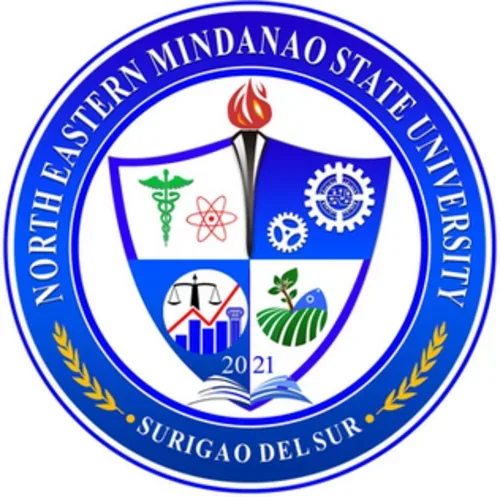</span><span class="vw-text"><span class="vw-name">NEMSU Food Innovation Center</span><span class="vw-sub">North Eastern Mindanao State University (NEMSU) · Region XIII</span></span></button>
      <button class="vw-item" data-src="northern-mindanao-fic-ustp.html" data-k="northern mindanao fic (nmfic) — ustp fic university of science and technology of southern philippines (ustp) · " data-f1="FIC" data-f2="Region X" title="Northern Mindanao FIC (NMFIC) — USTP"><span class="vw-thumb"></span><span class="vw-text"><span class="vw-name">Northern Mindanao FIC (NMFIC) — USTP</span><span class="vw-sub">University of Science and Technology of Southern Philippines (USTP) · </span></span></button>
      <button class="vw-item" data-src="psu-dost-1-fic-pangasinan-state-university.html" data-k="psu-dost 1 fic — pangasinan state university fic pangasinan state university · region i" data-f1="FIC" data-f2="Region I" title="PSU-DOST 1 FIC — Pangasinan State University"><span class="vw-thumb">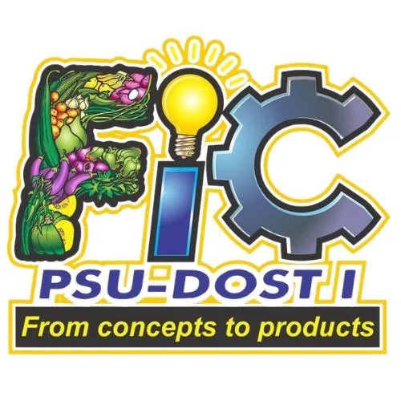</span><span class="vw-text"><span class="vw-name">PSU-DOST 1 FIC — Pangasinan State University</span><span class="vw-sub">Pangasinan State University · Region I</span></span></button>
      <button class="vw-item" data-src="soccsksargen-fic-sultan-kudarat-state-university.html" data-k="soccsksargen fic — sultan kudarat state university fic sultan kudarat state university · region xii" data-f1="FIC" data-f2="Region XII" title="SOCCSKSARGEN FIC — Sultan Kudarat State University"><span class="vw-thumb">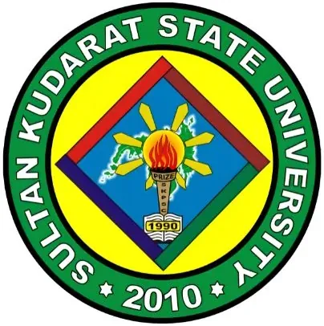</span><span class="vw-text"><span class="vw-name">SOCCSKSARGEN FIC — Sultan Kudarat State University</span><span class="vw-sub">Sultan Kudarat State University · Region XII</span></span></button>
      <button class="vw-item has-rem" data-src="up-diliman-dost-food-innovation-facility.html" data-k="up diliman–dost food innovation facility (fif) fic university of the philippines diliman · ncr" data-f1="FIC" data-f2="NCR" title="UP Diliman–DOST Food Innovation Facility (FIF)

⚠ Internal remarks (not shown on the page):
• ✅ Contact &amp; logo corrected July 13, 2026. Email updated from the department address fsnche.upd@up.edu.ph to the facility&#x27;s own uppfp@up.edu.ph, published on the UPCHE Pilot Food Plant page (the official page of the UP Diliman Pilot Food Plant). Logo replaced with the Pilot Food Plant&#x27;s own four-quadrant mark from that page. Address confirmed there: College of Home Economics, A. Ma. Regidor St., UP Diliman, Quezon City 1101. The Facebook Page property was already correct."><span class="vw-thumb"></span><span class="vw-text"><span class="vw-name">UP Diliman–DOST Food Innovation Facility (FIF)<span class="vw-flag" aria-label="has internal remarks">⚠</span></span><span class="vw-sub">University of the Philippines Diliman · NCR</span></span></button>
      <button class="vw-item" data-src="western-visayas-food-innovation-center-guimaras-state-university.html" data-k="western visayas food innovation center — guimaras state university fic guimaras state university · region vi" data-f1="FIC" data-f2="Region VI" title="Western Visayas Food Innovation Center — Guimaras State University"><span class="vw-thumb"></span><span class="vw-text"><span class="vw-name">Western Visayas Food Innovation Center — Guimaras State University</span><span class="vw-sub">Guimaras State University · Region VI</span></span></button>
      <button class="vw-item" data-src="zamboanga-peninsula-fic-zscmst.html" data-k="zamboanga peninsula fic — zscmst fic zamboanga state college of marine sciences &amp; technology (zscmst) · reg" data-f1="FIC" data-f2="Region IX" title="Zamboanga Peninsula FIC — ZSCMST"><span class="vw-thumb"></span><span class="vw-text"><span class="vw-name">Zamboanga Peninsula FIC — ZSCMST</span><span class="vw-sub">Zamboanga State College of Marine Sciences &amp; Technology (ZSCMST) · Reg</span></span></button>

      <div class="vw-empty" id="vwEmpty" style="display:none">No matches. Try clearing a filter.</div>
    </nav>
  </aside>
  <iframe class="vw-frame" name="vwframe" id="vwframe" src="adamson-nest-neo-science-technology-incubation-center.html" title="Detail preview"></iframe>
</div>
<script>
  var items=document.querySelectorAll('.vw-item');
  function vwPick(el){document.querySelectorAll('.vw-item.active').forEach(function(a){a.classList.remove('active')});el.classList.add('active');document.getElementById('vwframe').src=el.dataset.src;}
  items.forEach(function(el){el.addEventListener('click',function(){vwPick(el)})});
  if(items.length)items[0].classList.add('active');
  var TOTAL=items.length;
  function vwVal(id){var e=document.getElementById(id);return e?e.value:'';}
  function vwApply(){
    var q=(vwVal('vwSearch')||'').toLowerCase(), f1=vwVal('vwF1'), f2=vwVal('vwF2'), shown=0;
    document.querySelectorAll('.vw-item').forEach(function(el){
      var ok = el.dataset.k.indexOf(q)>-1
            && (!f1 || el.dataset.f1===f1)
            && (!f2 || el.dataset.f2===f2);
      el.style.display = ok ? '' : 'none';
      if(ok) shown++;
    });
    document.querySelectorAll('.vw-group').forEach(function(g){
      var n=g.nextElementSibling, any=false;
      while(n && n.classList.contains('vw-item')){ if(n.style.display!=='none') any=true; n=n.nextElementSibling; }
      g.style.display = any ? '' : 'none';
    });
    var e=document.getElementById('vwEmpty'); if(e) e.style.display = shown ? 'none' : '';
    var c=document.getElementById('vwCount');
    if(c) c.textContent = (shown===TOTAL) ? TOTAL+' entries' : shown+' of '+TOTAL+' shown';
  }
  function vwReset(){var s=document.getElementById('vwSearch');if(s)s.value='';
    ['vwF1','vwF2'].forEach(function(i){var e=document.getElementById(i);if(e)e.value='';});vwApply();}
  vwApply();
</script>
</body></html>
